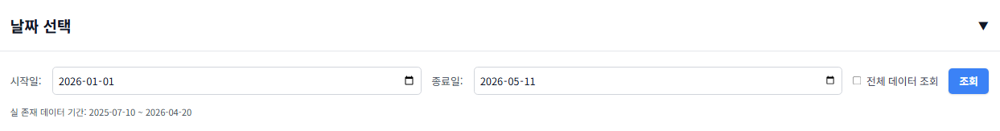
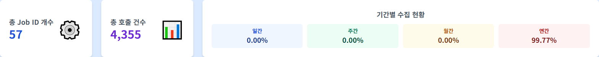
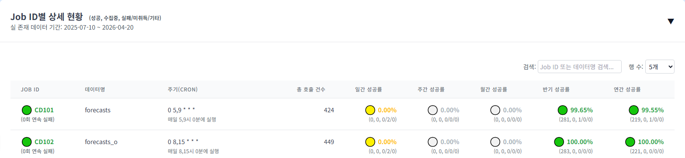
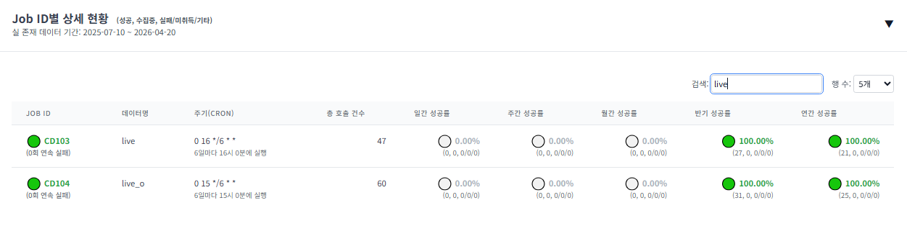
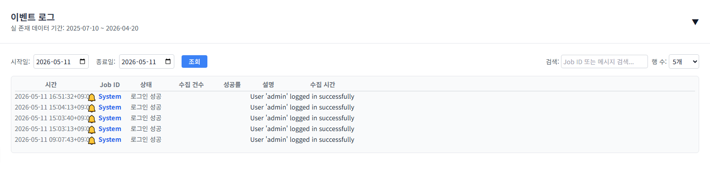
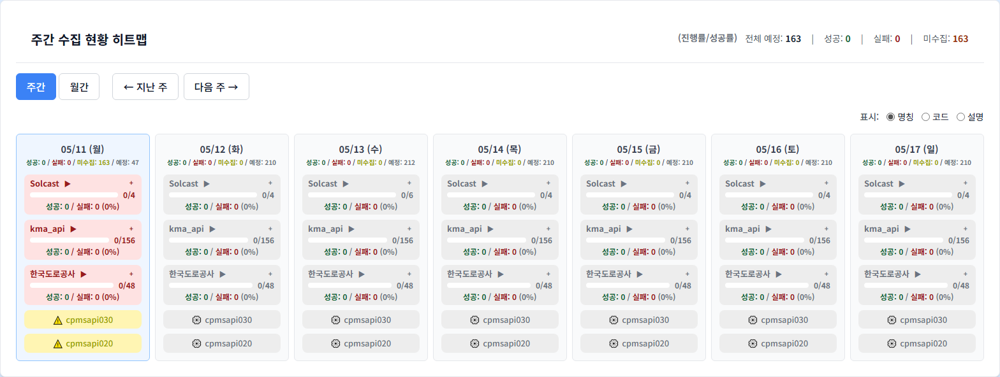
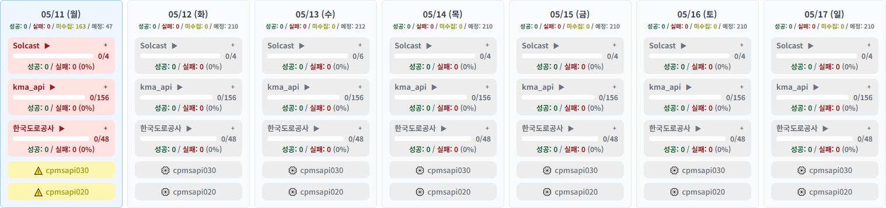
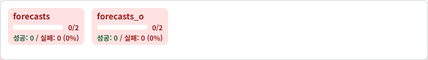
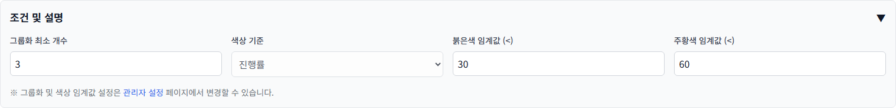
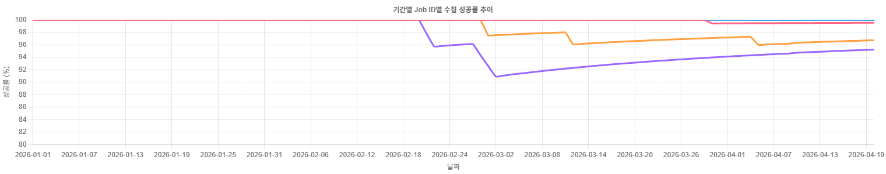

한국전력공사 ICT운영처 디지털운영부 · 2026-07-29
🔒 문서 취급 범위 — 내부 운영 한정. 외부 배포 금지. 본 메뉴얼은 「MSYS 데이터수집·모니터링시스템」의 운영자 및 인수인계자를 위한 조작 안내서로, 서버 주소·경로·설정 항목 등 운영에 필요한 정보를 포함합니다. 사외 공개·외부 배포용이 아닙니다. 전사 공개용 문서는 별도의 MSYS_구축완료보고서.md 이며, 접속 정보·계정 정보는 그 문서로 옮기지 않습니다.
| 항목 | 내용 |
|---|---|
| 문서명 | MSYS 운영자 메뉴얼 |
| 작성 부서 | ICT운영처 디지털운영부 |
| 작성일 | 2026-07-29 |
| 기준 소스 | git 최신 커밋 d35530e (REQ-2605-012, 2026-05-14) |
| 화면 캡처 시점 | 2026-05-11 — 마지막 기능 반영(REQ-2605-006 ~ 012) 이전 시점입니다 |
| 대상 독자 | 시스템 운영자 · 인수인계자 · 관리자(admin 권한 보유자) |
| 취급 등급 | 내부 운영 한정(외부 배포 금지) |
📷 화면 캡처에 대한 고지 (반드시 읽어 주십시오) ① 본 메뉴얼의 모든 화면 캡처는 2026-05-11에 찍은 것이며, 그 이후 반영된 변경(REQ-2605-006 ~ REQ-2605-012)은 캡처에 들어 있지 않습니다. 캡처와 실제 화면이 다른 부분은 해당 캡처 바로 아래에🔄 변경으로 적어 두었습니다. ② 브라우저 전체 화면 캡처는 싣지 않았습니다. A4 인쇄 폭(170mm)에서 약 34%로 줄어들어 본문 글자가 3~4px가 되므로 읽을 수 없기 때문입니다. 요소 단위 캡처만 실었습니다. ③ 캡처가 아예 없는 메뉴에는📷 화면 캡처 미보유라고 적어 두었습니다. 있는 것처럼 꾸미지 않았습니다. ④ 캡처에 보이는 건수·성공률 등 숫자는 캡처 시점의 시험 데이터이며, 현재 운영 수치가 아닙니다.
http://<운영 서버 주소>:18080 접속 (Flask 기동 포트 FLASK_PORT=18080)mngr_sett) 계정으로 접속하면 전체 메뉴가 보입니다⚠️ 계정·비밀번호는 본 메뉴얼에 적지 않습니다. 인수인계 시 담당자에게 별도 경로로 전달받으십시오. 가입 승인 시 비밀번호는 ID와 동일하게 초기화되므로, 최초 로그인 후 즉시 변경하십시오(상단 우측 → 비밀번호 변경).
| 항목 | 확인 방법 | |
|---|---|---|
| 서비스 기동 상태 | `ps -ef \ | grep msys` |
| DB 연결 상태 | 대시보드 데이터 로드 여부 | |
| 로그 확인 | /data/external_data_monitoring/log/ |
-오늘 레이블로 표시됩니다)PENDING) 확인MSYS(Monitoring System)는 외부 데이터 수집 현황을 모니터링하고 관리하는 웹 기반 대시보드 시스템입니다.
| 기능 | 설명 |
|---|---|
| 수집 현황 모니터링 | 실시간 수집 작업 상태 확인 |
| 스케줄 관리 | 수집 작업 스케줄 조회 및 관리 |
| API 키 관리 | API 키 등록, 만료 알림, 메일 발송 |
| 데이터 분석 | 차트/리포트 기반 데이터 분석 |
| 사용자 관리 | 계정 승인, 권한 설정, 데이터 접근 제어 |
| 시스템 설정 | 상태 코드, 아이콘, 스케줄 표시 설정 |
[사용자] → [Flask Web Server] → [PostgreSQL]
↓
[Redis Cache]
↓
[SMTP Mail]| 구성 요소 | 기술 |
|---|---|
| Backend | Python 3 + Flask 3.1.1 |
| Frontend | HTML/Jinja2 + jQuery + JavaScript |
| Database | PostgreSQL |
| Cache | Redis |
| SMTP |
| 환경 | 설명 |
|---|---|
| 운영 서버 | CIB040L5 (Linux) |
| 배포 경로 | /data/external_data_monitoring/msys/ |
| 로그 경로 | /data/external_data_monitoring/log/ |
| 타임존 | KST (Asia/Seoul, UTC+9) |
| 테이블 | 설명 |
|---|---|
| tb_user | 사용자 계정 |
| tb_con_mst | 수집 작업 마스터 |
| tb_con_hist | 수집 이력 |
| tb_api_key_mngr | API 키 관리 |
| tb_mngr_sett | 관리자 설정 |
| tb_menu | 메뉴 정의 |
아래 표는 DDL/data/tb_menu.csv(상단 메뉴 정의 시드) 12행과 routes/ 의 화면 라우트를 직접 대조해 만든 것입니다(2026-07-29 확인).
| 표시 순서 | 상단 메뉴 이름 | menu_id | URL | 본 메뉴얼 |
|---|---|---|---|---|
| 0 | 데이터 수집 일정 | collection_schedule | /collection_schedule | 데이터 수집 일정 |
| 1 | 실시간 현황 | card_summary | /card_summary | 실시간 현황(카드 요약) |
| 2 | 대시보드 | dashboard | /dashboard | 대시보드 |
| 3 | 잔디 | jandi | /jandi | 잔디 |
| 4 | 데이터분석 | data_analysis | /data_analysis | 데이터분석 |
| 5 | 차트분석 | chart_analysis | /chart_analysis | 차트분석 |
| 6 | 상세데이터 | raw_data | /raw_data | 상세데이터 |
| 7 | 데이터 명세서 | data_spec | /data_spec | 데이터 명세서 |
| 8 | 관리자 설정 | mngr_sett | /mngr_sett | 관리자 설정 |
| 9 | API 테스트 | api_test | /api_test | API 테스트 |
| 10 | Airflow | airflow | http://10.200.153.136:180 (외부) | 외부 연동 |
| 11 | Kafka UI | kafka_ui | http://10.200.153.136:28080/ (외부) | 외부 연동 |
시드 정의와 실제 화면의 차이 (확인된 것만 기재)
| 항목 | 상태 | 설명 |
|---|---|---|
API 키 관리 (/api_key_mngr) | 화면·라우트 있음, tb_menu.csv 시드에 없음 | 2026-05-11 캡처의 상단 메뉴에는 «API 키 관리» 가 보입니다. 운영 DB의 tb_menu 에는 등록되어 있고 CSV 시드만 오래된 것으로 보입니다. |
컬럼 매핑 (/mapping/) | 화면·라우트 있음, 상단 메뉴 없음 | URL 직접 입력으로만 접근합니다. |
«관리자» 메뉴 (/admin) | 없음 | 화면 라우트가 없습니다. 통계·엑셀 양식 관리는 «관리자 설정» 안의 탭입니다. |
⚠️ 위 표의 근거는 저장소의 시드 CSV와 소스 코드입니다. 운영 DB의 tb_menu 를 직접 조회한 것이 아니므로, 실제 상단 메뉴와 다르면 DB 값이 우선입니다.
권한(menu_id) | 설명 |
|---|---|
mngr_sett | 관리자 설정 메뉴 접근. 이 권한 보유 여부가 곧 관리자 판정 기준입니다(is_admin = 'mngr_sett' in user_permissions) |
api_key_mngr | API 키 관리 메뉴 접근 |
collection_schedule / dashboard / card_summary / jandi | 각 모니터링 화면 접근 |
analysis / data_analysis | 차트분석 / 데이터분석 접근 |
data_spec | 데이터 명세서 접근 |
raw_data / api_test | 상세데이터 / API 테스트 접근 |
ℹ️ 권한이 실제로 하는 일: 권한 값은 상단 메뉴에 그 항목을 보여줄지를 정합니다(templates/navbar.html—item.menu_id in g.user.permissions). 페이지 URL 자체를 막는 것은 API 키 관리(@api_key_mngr_required) 등 일부 화면뿐이며, 나머지 화면은 로그인만 되어 있으면 URL 직접 입력으로 열립니다. 다만 표시되는 데이터는 사용자별 데이터 접근 권한(tb_user_data_perm_auth_ctrl)으로 걸러집니다.
| 항목 | 내용 | 반영 |
|---|---|---|
| 로딩 표시 | 모든 화면이 같은 로딩 오버레이 하나를 씁니다. 화면 전체(상단 메뉴 포함)를 덮으며 기본 문구는 «데이터 로딩 중...» 입니다. | REQ-2605-009 (2026-05-13) |
| 화면 전환 시 요청 취소 | 데이터를 불러오는 중에 다른 메뉴로 이동하면 진행 중이던 요청이 취소됩니다. 이전에는 잔디 화면에서 이 처리가 없어 이동 후에도 로딩이 남아 있었습니다. | REQ-2605-009 |
| 상단 메뉴 크기 | 상단 메뉴 영역이 nav-container 라는 전용 규칙(최대 폭 1600px)으로 고정되어, 화면 안쪽 내용 폭을 바꿔도 메뉴 크기가 따라 변하지 않습니다. | REQ-2605-007 (2026-05-13) |
근거:static/js/components/loading.js,templates/base.html(#global-loading·#loading-message),static/css/common.css(.nav-container),templates/navbar.html.
.env 파일은 환경별 설정을 관리합니다.
🔒 아래 예시에서 비밀번호·키의 실제 값은 적지 않고 <설정값> 으로 표기합니다. 전체 변수 목록은 부록 «설정 항목 레퍼런스» 를 보십시오.
# Database
DB_HOST=localhost
DB_NAME=etl_db_dev
DB_USER=<설정값>
DB_PASSWORD=<설정값> # 🔒 실제 값은 문서에 적지 않는다
DB_PORT=5432
# Flask
FLASK_HOST=0.0.0.0
FLASK_PORT=18080
FLASK_DEBUG=False
# Session
ADMIN_SESSION_LIFETIME_DAYS=7
DEFAULT_SESSION_LIFETIME_MINUTES=20
# Mail
MAIL_SERVER=<사내 메일 릴레이 주소>
MAIL_PORT=25# 1. 가상환경 생성
python -m venv msys_venv
# 2. 가상환경 활성화
# Windows
msys_venv\Scripts\activate
# Linux
source msys_venv/bin/activate
# 3. 의존성 설치
pip install -r requirements.txt
# 4. .env 파일 설정
# 5. 서비스 기동
python msys_app.py| 항목 | 경로/값 |
|---|---|
| 배포 경로 | /data/external_data_monitoring/msys/ |
| Python 환경 | /data/external_data_monitoring/.web/bin/activate |
| 로그 경로 | /data/external_data_monitoring/log/ |
.env 파일 백업requirements.txt)# 1. 기존 프로세스 중지
./kill_data_moni.sh
# 2. 백업 생성
cp -r /data/external_data_monitoring/msys /data/external_data_monitoring/msys_backup_$(date +%Y%m%d)
# 3. 소스 배포
# ZIP 파일을 scp로 전송 후 압축 해제
unzip msys.zip -d /data/external_data_monitoring/msys/
# 4. 권한 설정
chown -R etl_user:etl_user /data/external_data_monitoring/msys
# 5. 가상환경 활성화
source /data/external_data_monitoring/.web/bin/activate
# 6. 의존성 설치 (변경 시)
pip install -r requirements.txt
# 7. 서비스 기동
./start_moni.sh
# 8. 기동 확인
ps -ef | grep msys
tail -f /data/external_data_monitoring/log/external_data_monitoring.log# 1. 기존 프로세스 중지
./kill_data_moni.sh
# 2. 백업 복원
cp -r /data/external_data_monitoring/msys_backup_YYYYMMDD/* /data/external_data_monitoring/msys/
# 3. 서비스 기동
./start_moni.sh핵심 기능: 수집 작업의 전반적인 현황을 한눈에 모니터링하고, Job ID별 상세 성공률 및 이벤트 로그를 조회합니다.
/ 루트 URL)/dashboarddashboardtb_user_acs_log 테이블에 접근 이력이 기록됩니다.📷 화면 캡처 안내: 본 문서의 화면 캡처는 2026-05-11 기준입니다(마지막 기능 반영 커밋 REQ-2605-012 이전). 캡처 이후 변경된 화면은 각 캡처 아래에 별도로 표기했습니다. 전체 화면 캡처는 A4 지면에서 글자를 읽을 수 없어 싣지 않았습니다.
date-selection-card)
| 요소 | ID | 설명 |
|---|---|---|
| 시작일 | startDate | 조회 시작 날짜 (기본값: 올해 1월 1일) |
| 종료일 | endDate | 조회 종료 날짜 (기본값: 오늘) |
| 전체 데이터 조회 | allDataCheckbox | 체크 시 날짜 선택 없이 전체 기간 조회 |
| 조회 버튼 | - | 데이터를 다시 로드합니다 |
| 실 존재 데이터 기간 | minDateDisplay ~ maxDateDisplay | DB에 실제로 존재하는 데이터의 최소/최대 날짜 |
동작 로직:
전체 데이터 조회 체크 시 시작일/종료일 입력 필드가 비활성화되고, 전체 기간 데이터를 조회합니다.loadDashboardSummary()가 호출되어 데이터가 갱신됩니다.주의사항:
end_date + 1일로 처리되어 해당 종료일까지의 데이터가 포함됩니다.dashboard-main-grid)totalJobsCount)summaryData.length (CHRT_DSP_YN='N'으로 숨겨진 Job은 제외)
totalCollectionsCount)(성공 + 실패 + 미수집 + 진행중) 건수 합계static/js/modules/dashboard/ui.js updateSummaryCards() — overall_success_count + overall_fail_count + overall_no_data_count + overall_ing_countoverall_ing_count)이 합계에서 빠져 있었습니다.일간 / 주간 / 월간 / 반기 / 연간 성공률을 표시합니다.
| 기간 | ID | 계산식 | 기본 임계값 |
|---|---|---|---|
| 일간 | daySuccessRate | 일간 성공 / (일간 성공 + 일간 실패) × 100 | 95% |
| 주간 | weekSuccessRate | 주간 성공 / (주간 성공 + 주간 실패) × 100 | 90% |
| 월간 | monthSuccessRate | 월간 성공 / (월간 성공 + 월간 실패) × 100 | 85% |
| 반기 | halfSuccessRate | 반기 성공 / (반기 성공 + 반기 실패) × 100 | 80% |
| 연간 | yearSuccessRate | 연간 성공 / (연간 성공 + 연간 실패) × 100 | 75% |
🔄 2026-05-12 변경(REQ-2605-006): 성공률 분모에서 미수집(no_data)이 제외되었습니다. 근거:static/js/modules/dashboard/dashboardTable.jscreatePeriodRateDisplay()—calculatedPeriodTotal = successCount + failCount. 위 캡처(2026-05-11)는 변경 전 값이므로, 화면의 실제 수치와 다를 수 있습니다.
색상 기준:
srSuccessColor (기본 녹색 #28a745)srWarningColor (기본 노란색 #ffc107)job-details-card)접이식 동작: 카드 헤더를 클릭하면 내용이 접히거나 펼쳐집니다.
| 컬럼 | 데이터 | 설명 |
|---|---|---|
| Job ID | job_id | 수집 작업 고유 ID. 관리자는 Airflow 링크로 이동 가능 |
| 데이터명 | cd_nm | tb_con_mst의 코드명 |
| 주기(cron) | frequency | 수집 주기 (cron 표현식). 하단에 해석된 텍스트 표시 |
| 총 호출 건수 | overall_total | 성공 + 실패 + 미수집 + 진행중 건수 (REQ-2605-006 반영) |
| 일간 성공률 | day_success / day_total | 오늘 기준 성공률. 아이콘 + 색상 + 툴팁 |
| 주간 성공률 | week_success / week_total | 최근 7일 기준 |
| 월간 성공률 | month_success / month_total | 최근 30일 기준 |
| 반기 성공률 | half_success / half_total | 최근 6개월 기준 |
| 연간 성공률 | year_success / year_total | 최근 1년 기준 |

아이콘 및 색상:
cnn_failr_icon_id + cnn_failr_wrd_colr: 연속 실패(임계값 초과) 시cnn_warn_icon_id + cnn_warn_wrd_colr: 연속 실패(경고 임계값) 시 cnn_sucs_icon_id + cnn_sucs_wrd_colr: 정상 시연속 실패 (fail_streak):
CD902(장애) 또는 CD903(미수집) 상태인 횟수SELECT COUNT(*) FROM (SELECT status FROM TB_CON_HIST WHERE job_id = ? ORDER BY start_dt DESC LIMIT 10) WHERE status IN ('CD902', 'CD903')임계값 비교:
fail_streak >= cnn_failr_thrs_val (기본 3회): 위험(빨간색)fail_streak >= cnn_warn_thrs_val (기본 1회): 경고(노란색)성공률 계산:
성공률 = success / (success + fail) × 100no_data)·진행중(ing)은 분모에 포함되지 않습니다(REQ-2605-006).sql/dashboard/dashboard_sql.py group_mappings):success = CD901 · fail = CD902 · no_data = CD903, CD905, CD906, CD908 · ing = CD904
아이콘:
sucs_rt_sucs_icon_id (기본 없음)sucs_rt_warn_icon_id (기본 없음)하단 툴팁:
(성공건수, 진행중건수, 실패건수/미수집건수/기타건수)detailTableSearch): Job ID, 데이터명(cd_nm), 주기(frequency)로 실시간 필터링detailTablePageSize): 5/10/20/50/100개 선택 가능필터링 로직:
filteredData = allData.filter(item =>
item.job_id.toLowerCase().includes(searchTerm) ||
item.cd_nm.toLowerCase().includes(searchTerm) ||
item.frequency.toLowerCase().includes(searchTerm)
)
event-log-card)접이식 동작: 카드 헤더를 클릭하면 내용이 접히거나 펼쳐집니다.
tb_con_hist_evnt_logEVNT_CHG_ROW (JSONB)에서 추출con_id: 수집 IDstart_dt: 시작 시간end_dt: 종료 시간job_id: Job IDrqs_info: 요청 정보status: 상태 코드| 코드 | 의미(tb_sts_cd_mst.nm) | 설명 | 기본 아이콘 |
|---|---|---|---|
| CD901 | 성공 | 수집 완료 | ✅ |
| CD902 | 실패 | 수집 실패 | ❌ |
| CD903 | 데이터 존재안함 | 수집은 실행됐으나 받은 데이터 없음 | ⚫ |
| CD904 | 진행중 | 수집 진행 중 | 💾 |
| CD905 | DMZ완료 | DMZ 구간 전송 완료 | 🛡️ |
| CD906 | 재시도 | 재시도 실행 | 🔄 |
| CD907 | 예정 | 아직 실행 전(스케줄만 존재) | ⚙️ |
| CD908 | (명칭 미등록) | 경고성 상태 | ⚠️ |
| AUTH_LOGIN_SUCCESS | 로그인 성공 | 시스템 이벤트 | - |
| AUTH_REGISTER | 가입 신청 | 시스템 이벤트 | - |
| AUTH_APPROVE | 가입 승인 | 시스템 이벤트 | - |
| AUTH_REJECT | 가입 거절 | 시스템 이벤트 | - |
| AUTH_DELETE | 사용자 삭제 | 시스템 이벤트 | - |
| AUTH_RESET_PW | 비밀번호 초기화 | 시스템 이벤트 | - |
| AUTH_CHANGE_PW | 비밀번호 변경 | 시스템 이벤트 | - |

🔄 2026-05-14 변경(REQ-2605-011): 위 캡처의 시간 열에는2026-05-11 16:51:32+09:00처럼 타임존 표기(+09:00) 가 붙어 있으나, 현재 화면에서는 이 표기를 떼고2026-05-11 16:51:32로만 보여 줍니다. 시간 열 글자색이 옅어지고(text-gray-400) 열 너비가 120px로 고정되었습니다. 근거:static/js/modules/dashboard/eventLog.jsrenderEventLogToasts().
| 컬럼 | 내용 | 설명 |
|---|---|---|
| 시간 | start_dt | 이벤트 발생 시간 (KST) |
| 아이콘 | 상태별 아이콘 | 관리자 설정 또는 기본 아이콘 |
| Job ID | job_id | 작업 ID (시스템 이벤트는 'System') |
| 상태 | status → 해석 | CD901 → '정상 수집' 등 |
| 수집 건수 | rqs_info 파싱 | "총 요청 수: N, 실패: M"에서 추출 |
| 성공률 | 계산 | 성공 / 총 × 100 |
| 설명 | status → 해석 | '수집완료', '실패', '미수집', '진행중' |
| 수집 시간 | end_dt - start_dt | 소요 시간 (시간 단위, 소수점 1자리) |
eventLogSearch): Job ID, 상태, 설명으로 실시간 필터링eventLogPageSize): 5/10/20/50/100개 선택save-event-log-btn):POST /api/save-event-log[사용자] → [dashboard.html] → [dashboard.js] → [events.js]
↓
[fetchDashboardSummary()]
↓
[GET /api/dashboard/summary]
↓
[DashboardService.get_summary()]
↓
┌────────────────────────────────────┼────────────────────────────────────┐
↓ ↓ ↓
[DashboardMapper] [CollectionScheduleService] [MngrSettMapper]
↓ ↓ ↓
[DashboardSQL.get_summary()] [get_schedule_only()] [get_all_settings()]
↓ ↓ ↓
[TB_CON_HIST] (과거 데이터) [TB_CON_HIST] + [스케줄] (오늘 데이터) [TB_MNGR_SETT]
└────────────────────────────────────┼────────────────────────────────────┘
↓
[_combine_historical_and_today_data()]
↓
[_apply_settings_and_filters()] (CHRT_DSP_YN 필터)
↓
[_add_fail_streaks()] (연속 실패 계산)
↓
[JSON 응답] → [updateSummaryCards()] + [renderDashboardSummaryTable()]CollectionScheduleService.get_schedule_only():
CD901: 성공CD902, CD903: 실패CD904: 진행 중CD907: 스케줄 제외 (total_scheduled에서 제외)병합 로직:
TB_CON_HIST)와 오늘 데이터를 Job ID 기준으로 병합day_* 필드에 저장 (day_success, day_fail_count, day_ing_count, day_no_data_count, day_total_scheduled)week_, month_, half_, year_ 필드에 저장tb_mngr_sett 설정 항목:
| 설정 항목 | 컬럼명 | 기본값 | 설명 |
|---|---|---|---|
| 대시보드 표시 여부 | CHRT_DSP_YN | Y | N인 경우 대시보드에서 제외 |
| 연속 실패 임계값(위험) | cnn_failr_thrs_val | 3 | 이 횟수 이상 연속 실패 시 빨간색 |
| 연속 실패 임계값(경고) | cnn_warn_thrs_val | 1 | 이 횟수 이상 연속 실패 시 노란색 |
| 연속 실패 성공 아이콘 | cnn_sucs_icon_id | - | 정상 상태 아이콘 |
| 연속 실패 경고 아이콘 | cnn_warn_icon_id | - | 경고 상태 아이콘 |
| 연속 실패 위험 아이콘 | cnn_failr_icon_id | - | 위험 상태 아이콘 |
| 일간 성공률 임계값 | dly_sucs_rt_thrs_val | 95 | % |
| 주간 성공률 임계값 | dd7_sucs_rt_thrs_val | 90 | % |
| 월간 성공률 임계값 | mthl_sucs_rt_thrs_val | 85 | % |
| 반기 성공률 임계값 | mc6_sucs_rt_thrs_val | 80 | % |
| 연간 성공률 임계값 | yy1_sucs_rt_thrs_val | 75 | % |
| 성공률 성공 아이콘 | sucs_rt_sucs_icon_id | - | 임계값 이상 아이콘 |
| 성공률 경고 아이콘 | sucs_rt_warn_icon_id | - | 임계값 미만 아이콘 |
조작 절차:
시작일 입력 필드 클릭 → 날짜 선택종료일 입력 필드 클릭 → 날짜 선택조회 버튼 클릭 (또는 Enter)확인 방법:
조작 절차:
전체 데이터 조회 체크박스 클릭조작 절차:
검색 입력 필드에 텍스트 입력조작 절차:
이벤트 로그 카드 펼치기 (헤더 클릭)조회 버튼 클릭조작 절차:
이벤트 로그 저장 버튼 클릭저장 완료: [파일경로] 메시지 확인주의사항:
전체 데이터 조회 시에도 데이터가 로드되는지 확인| 증상 | 원인 | 해결 방법 |
|---|---|---|
| 대시보드가 비어있음 (데이터 없음) | 날짜 범위 내 데이터 없음 | 전체 데이터 조회 체크 또는 날짜 범위 확대 |
| 특정 Job이 표시되지 않음 | CHRT_DSP_YN='N' 설정됨 | 관리자 설정 → 해당 Job의 대시보드 표시 여부 확인 |
| 성공률이 0%로 표시됨 | 해당 기간 내 수집 이력 없음 | 데이터 수집 스케줄/에이전트 상태 확인 |
| 연속 실패 횟수가 이상함 | 상태 코드 분류 오류 | tb_sts_cd_mst의 성공/실패 코드 설정 확인 |
| 이벤트 로그에 AUTH_ 이벤트만 있음 | 비관리자 계정으로 조회 | 관리자 권한 확인 (비관리자는 시스템 이벤트 필터링됨) |
| 이벤트 로그 저장 실패 | 서버 디스크 공간 부족 | 서버 디스크 여유 공간 확인 |
| 테이블 | 설명 |
|---|---|
tb_con_hist | 수집 실행 이력 (Job ID별 성공/실패 상태) |
tb_con_hist_evnt_log | 이벤트 로그 (JSONB 형태로 변경 전/후 데이터 저장) |
tb_con_mst | 수집 작업 마스터 (Job ID, 주기, 데이터명) |
tb_mngr_sett | 관리자 설정 (성공률 임계값, 색상, 아이콘) |
tb_icon | 아이콘 마스터 |
tb_user_data_perm_auth_ctrl | 사용자별 데이터 접근 권한 |
SELECT COUNT(*) as fail_count
FROM (
SELECT status
FROM TB_CON_HIST
WHERE job_id = ?
ORDER BY start_dt DESC
LIMIT 10
) recent_runs
WHERE status IN ('CD902', 'CD903')SELECT
(EVNT_CHG_ROW ->> 'con_id')::text AS con_id,
EVNT_OCCR_TIME AS start_dt,
(EVNT_CHG_ROW ->> 'end_dt')::timestamptz AS end_dt,
(EVNT_CHG_ROW ->> 'job_id')::text AS job_id,
(EVNT_CHG_ROW ->> 'rqs_info')::text AS rqs_info,
(EVNT_CHG_ROW ->> 'status')::text AS status
FROM TB_CON_HIST_EVNT_LOG
WHERE EVNT_OCCR_TIME >= ? AND EVNT_OCCR_TIME <= ?
ORDER BY EVNT_OCCR_TIME DESC핵심 기능: 주간/월간 단위로 데이터 수집 작업의 예정 및 실제 실행 상태를 히트맵 형태로 모니터링하고, 그룹별/Job별 상세 현황과 메모를 관리합니다.
tb_menu.ord=0)/collection_schedulecollection_scheduletb_user_acs_log 테이블에 접근 이력이 기록됩니다.📷 화면 캡처 안내: 본 문서의 화면 캡처는 2026-05-11 기준입니다(마지막 기능 반영 커밋 REQ-2605-012 이전). 캡처 이후 변경된 부분은 해당 캡처 아래에 표기했습니다. 전체 화면 캡처는 A4 지면에서 글자를 읽을 수 없어 싣지 않았습니다.
.heatmap-container)
카드 헤더의 요약 통계 (.summary-stats)
| 요소 | 선택자 | 설명 |
|---|---|---|
| 제목 | .card-title | "주간 수집 현황 히트맵" 또는 "월간 수집 현황 히트맵" |
| 요약 통계 | .summary-stats | 전체 예정 / 성공 / 실패 / 미수집 건수 |
| 캘린더 그리드 | #calendar-grid | 7열(주간) 또는 N열(월간) 그리드 |
| 설정 패널 | #settings-container | 그룹화 임계값, 색상 기준 (기본 접힘) |
.controls)| 요소 | ID | 설명 |
|---|---|---|
| 주간 버튼 | #weekly-btn | 주간 뷰로 전환 (기본값) |
| 월간 버튼 | #monthly-btn | 월간 뷰로 전환 |
| 이전 주 | #prev-week-btn | 한 주 이전으로 이동 |
| 다음 주 | #next-week-btn | 한 주 이후로 이동 |
| 이전 달 | #prev-month-btn | 한 달 이전으로 이동 |
| 다음 달 | #next-month-btn | 한 달 이후로 이동 |
동작 로직:
week_offset 또는 month_offset 값이 증감/api/collection_schedule?week_offset=N API 호출#calendar-grid)Day 열 구조:
┌──────────────┐
│ 월 01/13 │ ← .day-header (요일 + 날짜)
├──────────────┤
│ [CD101] │ ← .job-pill (단일 Job)
│ [CD102] │ 상태별 색상: 초록(성공), 빨강(실패), 주황(미수집)
│ [그룹A ▶] │ ← .group-pill-summary (그룹화된 Job)
│ 진행률 ████ │ 마우스 오버 시 팝업으로 상세 Job 목록 표시
└──────────────┘Job 상태별 색상:
| 상태 | 클래스 | 색상 | 의미 |
|---|---|---|---|
| 성공 | .status-success | 배경: #dcfce7, 글자: #166534 | 수집 완료 |
| 실패 | .status-fail | 배경: #fee2e2, 글자: #991b1b | 수집 실패 |
| 미수집 | .status-nodata | 배경: #ffedd5, 글자: #9a3412 | 데이터 없음 |
| 진행중 | .status-inprogress | 배경: #fef9c3, 글자: #854d0e | 수집 진행 중 |
| 예정 | .status-scheduled | 배경: #e5e7eb, 글자: #4b5563 | 아직 실행 전 |

🔄 2026-05-14 변경(REQ-2605-012): 위 캡처에서는 모든 Day 열 머리글이 같은 크기·같은 색이지만, 현재 화면은 오늘 날짜만 파란색(#3b82f6) · 1.1rem 으로 크게 표시하고 날짜 뒤에-오늘이라는 레이블을 덧붙입니다(예:05/14 (목) -오늘). 오늘 열을 눈으로 바로 찾기 위한 표시입니다. 근거:static/js/pages/collection_schedule.jsdayHeader.innerHTML.
🔄 2026-05-14 변경(REQ-2605-011): 그룹 pill의 테두리 색이 그룹 상태의 글자색을 따라가도록 바뀌었고, 메모가 등록된 그룹은 메모 색으로 테두리가 바뀝니다(메모를 지우면 원래 상태 색으로 되돌아갑니다). 캡처에는 반영되어 있지 않습니다.
.popup)
표시 조건: 그룹화된 Job 셀 클릭 표시 내용:
#display-mode-selector)| 모드 | 값 | 표시 내용 |
|---|---|---|
| 명칭 | name | Job의 한글 이름 (cd_nm) |
| 코드 | code | Job ID (예: CD101) |
| 설명 | desc | Job 상세 설명 |
#memo-popup)📷 화면 캡처 미보유: 보유 캡처가 브라우저 전체 화면이라 A4 지면에서 글자를 읽을 수 없어 싣지 않았습니다. 팝업 요소 단위 재캡처가 필요합니다.
표시 조건: 그룹 셀의 + 버튼 클릭 (관리자만) 기능:
#settings-container)카드 헤더의 조건 및 설명 을 펼치면 그룹화·색상 기준을 확인할 수 있습니다(값 변경은 관리자 설정 페이지에서 합니다).

| 항목 | 뜻 | 캡처 시점 값 |
|---|---|---|
| 그룹화 최소 개수 | 같은 접두사 Job이 이 개수 이상이면 하나의 그룹 pill로 묶음 | 3 |
| 색상 기준 | pill 색을 진행률로 칠할지 성공률로 칠할지 | 진행률 |
| 붉은색 임계값 (<) | 이 값 미만이면 붉은색 | 30 |
| 주황색 임계값 (<) | 이 값 미만이면 주황색 | 60 |
#guide-toggle-btn)위치: 화면 우측 하단 고정 (원형 ? 버튼) 표시 내용:
[사용자] → [collection_schedule.html] → [collection_schedule.js]
↓
[fetch('/api/collection_schedule')]
↓
[collection_schedule_routes.py]
↓
[CollectionScheduleService.get_schedule_only()]
↓
┌───────────────────────────────────┼───────────────────────────────────┐
↓ ↓ ↓
[_generate_scheduled_tasks()] [_fetch_and_group_history_data()] [MngrSettService]
↓ ↓ ↓
[cron + tb_con_mst] [DashboardMapper] [tb_mngr_sett]
↓ ↓ ↓
예정된 스케줄 생성 TB_CON_HIST 조회 (실제 실행 기록) 그룹화 임계값
└───────────────────────────────────┼───────────────────────────────────┘
↓
[_match_schedule_with_history()]
↓
날짜별 순차 매칭 → 상태 결정
↓
[JSON 응답] → [캘린더 그리드 렌더링]1단계: 스케줄 생성 (_generate_scheduled_tasks)
tb_con_mst의 cron 표현식 기반2단계: 히스토리 조회 (_fetch_and_group_history_data)
tb_con_hist에서 실제 수집 기록 조회date_key + job_id)3단계: 매칭 (_match_schedule_with_history)
4단계: 그룹화
grouping_threshold 기준🔄 2026-05-12 변경(REQ-2605-006): 이전에는 분모를CD901·CD902·CD907·CD908네 상태로 걸러서 셌으나, 지금은 표시 대상 Job 전체를 분모로 셉니다(예정CD907포함). 그래서 같은 날짜라도 변경 전보다 진행률이 낮게 보일 수 있습니다. 근거:static/js/pages/collection_schedule.js—validJobs필터 제거.
조작 절차:
주간 또는 월간 버튼 클릭확인 방법:
조작 절차:
← 지난 주 / 다음 주 → 버튼 클릭← 지난달 / 다음달 → 버튼 클릭확인 방법:
조작 절차:
표시: 라디오 버튼 그룹에서 선택확인 방법:
조작 절차:
[그룹A ▶])에 마우스 오버조작 절차:
저장 버튼 클릭확인 방법:
조작 절차:
수집 요청서 양식 다운로드 버튼 클릭| 증상 | 원인 | 해결 방법 |
|---|---|---|
| 히트맵이 비어있음 | 데이터 수집 기록 없음 | 날짜 범위 확대 또는 데이터 수집 에이전트 상태 확인 |
| Job이 표시되지 않음 | 사용자 데이터 권한 없음 | 관리자에게 데이터 접근 권한 요청 |
| 그룹 진행률이 이상함 | 그룹화 임계값 부적절 | 관리자 설정에서 grouping_threshold 조정 |
| 미수집이 과다함 | 수집 에이전트 장애 또는 스케줄 미등록 | tb_con_mst의 cron 설정 및 에이전트 로그 확인 |
| 팝업이 표시되지 않음 | 그룹화되지 않은 단일 Job | 단일 Job은 팝업 없이 직접 상태 표시 |
| 메모 저장 실패 | 관리자 권한 없음 | 관리자 계정으로 로그인 확인 |
| 테이블 | 설명 |
|---|---|
tb_con_hist | 수집 실행 이력 (실제 성공/실패 상태) |
tb_con_mst | 수집 작업 마스터 (Job ID, cron 주기, 그룹 정보) |
tb_mngr_sett | 관리자 설정 (그룹화 임계값, 색상 기준) |
tb_grp_memo | 그룹 메모 (그룹 ID, 날짜, 내용, 작성자) |
tb_user_data_perm_auth_ctrl | 사용자별 데이터 접근 권한 |
GET /api/collection_schedule?view=weekly&week_offset=0
GET /api/collection_schedule?view=monthly&month_offset=0응답 구조:
[
{
"job_id": "CD101",
"date": "2025-12-18",
"status": "success",
"scheduled_time": "06:30",
"is_grouped": false
},
{
"group_id": "GRP_A",
"date": "2025-12-18",
"progress": 85,
"jobs": ["CD201", "CD202"],
"is_grouped": true
}
]핵심 기능: 선택한 기간과 Job ID를 기준으로 수집 성공률 추이와 장애 코드별 비율을 차트로 시각화하여 분석합니다.
/chart_analysisanalysistb_user_acs_log 테이블에 접근 이력이 기록됩니다.📷 화면 캡처 안내: 이 메뉴는 차트 영역 1장만 요소 단위 캡처를 보유합니다(2026-05-11 기준). 나머지 보유 캡처는 브라우저 전체 화면이라 A4 지면에서 판독할 수 없어 싣지 않았습니다.
#date-selection-card-chart)| 요소 | ID | 설명 |
|---|---|---|
| 시작일 | #startDate | 조회 시작 날짜 |
| 종료일 | #endDate | 조회 종료 날짜 |
| 실 존재 데이터 기간 | #chart-min-date ~ #chart-max-date | DB에 실제로 존재하는 데이터의 최소/최대 날짜 |
동작 로직:
collapsible_controls.html 공통 모듈을 사용하여 접이식 동작을 제공합니다.#chart-options-card)| 옵션 | 값 | 설명 |
|---|---|---|
| 라벨 표시 방식 | name | Job의 한글 이름 (cd_nm) 표시 |
| 라벨 표시 방식 | code | Job ID (예: CD101) 표시 |
동작 로직:
chart_analysis.js의 labelDisplayType 이벤트 리스너에서 처리합니다.#job-selection-card-chart)| 요소 | 설명 |
|---|---|
| 모두 선택 버튼 | 모든 Job ID 체크박스 선택 |
| 모두 해제 버튼 | 모든 Job ID 체크박스 해제 |
| 개별 체크박스 | #jobCheckboxes 낸 각 Job ID별 체크박스 |
동작 로직:
tb_con_mst의 모든 Job ID를 체크박스로 로드합니다.data_permissions)에 따라 표시되는 Job이 필터링됩니다.#success-rate-chart-card)| 요소 | 설명 |
|---|---|
| 차트 유형 선택 | 라인 차트 / 바 차트 전환 |
| 차트 캔버스 | #successRateChart (Chart.js) |
| 범례 영역 | #successRateLegend (세로 스크롤 지원, 최대 높이 180px) |

데이터 출처:
GET /api/chart_data (또는 /api/analysis/chart)AnalysisService.get_dynamic_chart_data()AnalysisMapper.get_dynamic_chart_data()sql/analytics/analytics_sql.py차트 데이터 구조:
[
{
"job_id": "CD101",
"date": "2025-01",
"success_rate": 95.5,
"success_count": 100,
"fail_count": 5,
"total_count": 105
}
]색상 및 스타일:
tension: 0.3 (부드러운 곡선)barPercentage: 0.7flex-wrap: wrap)#trouble-code-chart-card)| 요소 | 설명 |
|---|---|
| 차트 유형 선택 | 도넛 차트 / 바 차트 전환 |
| 차트 캔버스 | #troublePieChart (Chart.js) |
데이터 출처:
tb_con_hist의 status 컬럼 집계표시 데이터:
| 상태 코드 | 의미 | 색상 |
|---|---|---|
| CD901 | 정상 수집 | 녹색 계열 |
| CD902 | 장애 발생 | 빨간색 계열 |
| CD903 | 미수집 | 주황색 계열 |
| CD904 | 수집중 | 노란색 계열 |
| 기타 | 기타 상태 | 회색 계열 |
[사용자] → [chart_analysis.html] → [chart_analysis.js]
↓
[fetch('/api/chart_data')]
↓
[analysis_routes.py]
↓
[AnalysisService.get_dynamic_chart_data()]
↓
┌───────────────────────────────────┼───────────────────────────────────┐
↓ ↓ ↓
[AnalysisMapper] [UserMapper] [MstMapper]
↓ ↓ ↓
[sql/analytics/analytics_sql.py] [data_permissions 조회] [Job ID 목록]
↓ ↓ ↓
[TB_CON_HIST] 집계 [TB_USER_DATA_PERM_AUTH_CTRL] [TB_CON_MST]
└───────────────────────────────────┼───────────────────────────────────┘
↓
[JSON 응답] → [Chart.js 렌더링]성공률 = (CD901 건수 / 해당 날짜·Job의 전체 이력 건수) × 100tb_con_hist 전체 행 수입니다 — 미수집·진행중을 포함해 모든 상태가 들어갑니다.근거: sql/analytics/get_success_rate_trend.sql (SUM(CASE WHEN status='CD901' THEN 1 ELSE 0 END) 100.0 / NULLIF(COUNT(),0))
성공 + 실패 뿐입니다(REQ-2605-006). 두 화면의 성공률 수치가 어긋나 보이는 것은 이 차이 때문이며, 오류가 아닙니다.GROUP BY (start_dt AT TIME ZONE 'Asia/Seoul')::date, job_id 로 처리합니다.관리자(mngr_sett):
job_ids 파라미터 그대로 사용일반 사용자:
TB_USER_DATA_PERM_AUTH_CTRL에서 허용된 Job ID만 조회job_ids와 교집합(intersection)으로 필터링조작 절차:
시작일 입력 필드 클릭 → 날짜 선택종료일 입력 필드 클릭 → 날짜 선택확인 방법:
조작 절차:
Job ID 선택 카드 펼치기 (헤더 클릭)모두 선택 / 모두 해제 버튼 사용확인 방법:
조작 절차:
기간별 수집 성공률 또는 장애 코드별 비율 카드 펼치기라인 차트 / 바 차트 또는 도넛 차트 / 바 차트 라디오 버튼 선택확인 방법:
조작 절차:
차트 표시 옵션 카드 펼치기명칭 또는 코드 라디오 버튼 선택확인 방법:
| 증상 | 원인 | 해결 방법 |
|---|---|---|
| 차트가 비어있음 | 선택된 Job ID 없음 또는 데이터 없음 | Job ID 선택 확인, 날짜 범위 확대 |
| 성공률이 0%로 표시됨 | 해당 기간 내 수집 이력 없음 | 데이터 수집 스케줄/에이전트 상태 확인 |
| 특정 Job이 보이지 않음 | 사용자 데이터 권한 없음 | 관리자에게 데이터 접근 권한 요청 |
| 범례가 짤려서 보임 | 선택 Job ID가 너무 많음 | 일부 Job만 선택하거나 차트 카드 확대 |
| 차트 로딩이 느림 | 조회 기간이 너무 김 | 시작일/종료일 범위를 좁혀서 조회 |
| 장애 코드가 부정확함 | 상태 코드 분류 오류 | tb_sts_cd_mst의 성공/실패 코드 설정 확인 |
| 테이블 | 설명 |
|---|---|
tb_con_hist | 수집 실행 이력 (성공/실패 상태, 시간) |
tb_con_mst | 수집 작업 마스터 (Job ID, 데이터명) |
tb_sts_cd_mst | 상태 코드 마스터 (CD901~CD904 정의) |
tb_user_data_perm_auth_ctrl | 사용자별 데이터 접근 권한 |
GET /api/chart_data?start_date=2025-01-01&end_date=2025-12-31&job_ids=CD101,CD102응답 구조:
[
{
"job_id": "CD101",
"cd_nm": "기상청예보",
"date": "2025-01",
"success_rate": 95.5,
"success_count": 100,
"fail_count": 5,
"no_data_count": 0,
"total_count": 105
}
]핵심 기능: 수집 데이터의 소요 시간, 성공률, 연속 실패 등 다양한 지표를 분석하여 데이터 품질과 수집 안정성을 평가합니다.
/data_analysisanalysistb_user_acs_log 테이블에 접근 이력이 기록됩니다.📷 화면 캡처 미보유: 이 메뉴는 A4 지면에 실을 수 있는 요소 단위 캡처가 없습니다. 보유 중인 캡처는 브라우저 전체 화면(1904×933px)이라 A4 인쇄 폭(170mm)에서 약 34%로 줄어들어 본문 글자가 3~4px가 되므로 판독할 수 없어 싣지 않았습니다. 요소 단위 재캡처가 필요합니다.
#filter-card)| 요소 | ID | 설명 |
|---|---|---|
| 시작일 | #startDate | 조회 시작 날짜 |
| 종료일 | #endDate | 조회 종료 날짜 |
| Job ID | #jobIdSelect | 특정 Job ID 필터 (기본: 전체) |
| 장애코드 | #errorCodeSelect | 특정 장애 코드 필터 (기본: 전체) |
| 실 존재 데이터 기간 | #data-min-date ~ #data-max-date | DB에 실제로 존재하는 데이터의 최소/최대 날짜 |
동작 로직:
tb_con_mst 및 tb_sts_cd_mst에서 동적으로 로드됩니다.| 카드 | ID | 내용 | 색상 |
|---|---|---|---|
| 최대/최소 소요 시간 | #durationRangeCard | 선택 기간 내 수집 소요 시간의 최대/최소값 | 파란색 |
| 실패 호출 건수 | #failCountCard | 상태 코드가 CD902(장애)인 건수 | 빨간색 |
| 중단 횟수 | #stopCountCard | 수집이 중단된 건수 | 볼색 |
계산 로직:
MAX(end_dt - start_dt), MIN(end_dt - start_dt)COUNT(*) WHERE status = 'CD902'COUNT(*) WHERE status IN ('CD903', 'CD905') (미수집, 중단)#job-info-card)| 기능 | 설명 |
|---|---|
| 검색 | #jobInfoSearch - Job ID 또는 한글명으로 실시간 필터링 |
| 행 수 | #jobInfoPageSize - 5/10/20/50/100개 선택 |
| 테이블 | #jobInfoTable - Job ID, 데이터명, 주기(cron), 설명 |
| 페이징 | #jobInfoPagination - 페이지 이동 버튼 |
데이터 출처:
tb_con_mst - Job 기본 정보tb_mngr_sett - 추가 설정 정보 (있는 경우)#raw-data-card)| 컬럼 | 데이터 | 설명 |
|---|---|---|
| 날짜 | start_dt | 수집 시작 날짜 (KST) |
| Job ID | job_id | 수집 작업 ID |
| 장애코드 | status | 상태 코드 (CD901~CD904 등) |
| 요일 | DAYOFWEEK(start_dt) | 일~토 요일 표시 |
| 수집시간(hr) | end_dt - start_dt | 실제 소요 시간 (시간 단위) |
| 예측 수집시간(hr) | predicted_duration | ML 또는 통계 기반 예측 소요 시간 |
| 완전성(%) | completeness | (실제 수집 건수 / 예상 건수) × 100 |
| 평균소요시간(hr) | avg_duration | 전체 기간 평균 소요 시간 |
| 최대/최소 제외 평균(hr) | trimmed_avg | 최대/최소값 제외 평균 |
| 최근3회평균(hr) | recent_3avg | 최근 3회 실행의 평균 소요 시간 |
| 연속실패 | fail_streak | 현재까지 연속 실패 횟수 |
| 이상치 | is_outlier | 평균 대비 2표준편차 이상 여부 |
| 성공률변화(%) | success_rate_change | 전 기간 대비 성공률 변화량 |
| 누적수집 | cumulative_count | 해당 Job의 누적 수집 건수 |
검색 및 필터링:
#rawDataSearch): Job ID 또는 장애코드로 실시간 필터링#rawDataPageSize): 10/20/50/100개 선택#rawPagination): 페이지 이동데이터 출처:
GET /api/data_analysis (또는 /api/analysis/data)AnalysisService.get_dynamic_chart_data() 또는 별도 분석 메소드AnalysisMappersql/analytics/analytics_sql.py[사용자] → [data_analysis.html] → [data_analysis.js]
↓
[fetch('/api/data_analysis')]
↓
[analysis_routes.py]
↓
[AnalysisService]
↓
┌───────────────────────────────────┼───────────────────────────────────┐
↓ ↓ ↓
[AnalysisMapper] [UserMapper] [MstMapper]
↓ ↓ ↓
[sql/analytics/analytics_sql.py] [data_permissions 조회] [Job ID 목록]
↓ ↓ ↓
[TB_CON_HIST] 집계 [TB_USER_DATA_PERM_AUTH_CTRL] [TB_CON_MST]
└───────────────────────────────────┼───────────────────────────────────┘
↓
[JSON 응답] → [테이블 렌더링]소요 시간 (Duration):
수집시간(hr) = (end_dt - start_dt)의 시간 단위 변환완전성 (Completeness):
완전성(%) = (실제 수집 건수 / 예상 수집 건수) × 100최대/최소 제외 평균 (Trimmed Average):
값이 3개 이상: (전체 합계 - 최대값 - 최소값) / (개수 - 2)
값이 2개 이하: 일반 평균최근 3회 평균 (Recent 3 Average):
최근 3회 실행의 소요 시간 산술평균연속 실패 (Fail Streak):
현재까지 연속된 CD902(장애) 또는 CD903(미수집) 횟수이상치 (Outlier):
|현재값 - 평균값| > 2 × 표준편차 → 이상치(True)성공률 변화:
성공률변화(%) = (현재 기간 성공률 - 이전 기간 성공률)조작 절차:
시작일 / 종료일 입력 필드에서 날짜 선택Job ID 또는 장애코드 드롭다운에서 선택 (선택 사항)확인 방법:
조작 절차:
Job ID 상세정보 카드 펼치기 (헤더 클릭)조작 절차:
수집 및 가공 데이터 카드 펼치기확인 방법:
총 1,234건)| 증상 | 원인 | 해결 방법 |
|---|---|---|
| 테이블이 비어있음 | 날짜 범위 내 데이터 없음 | 날짜 범위 확대 또는 필터 초기화 |
| 소요 시간이 0으로 표시됨 | end_dt가 start_dt와 동일 | 데이터 품질 문제, tb_con_hist 확인 |
| 이상치가 너무 많음 | 데이터 품질 저하 또는 기준값 부적절 | 관리자 설정에서 이상치 임계값 조정 |
| 예측 수집시간이 부정확함 | 예측 모델 미학습 또는 데이터 부족 | 충분한 학습 데이터 확보 후 모델 재학습 |
| 완전성이 낮음 | 데이터 유실 또는 수집 누락 | 수집 에이전트 로그 확인 |
| 특정 Job이 보이지 않음 | 사용자 데이터 권한 없음 | 관리자에게 데이터 접근 권한 요청 |
| 테이블 | 설명 |
|---|---|
tb_con_hist | 수집 실행 이력 (소요 시간, 상태, 시간) |
tb_con_mst | 수집 작업 마스터 (Job ID, 데이터명, 주기) |
tb_sts_cd_mst | 상태 코드 마스터 (CD901~CD904 정의) |
tb_user_data_perm_auth_ctrl | 사용자별 데이터 접근 권한 |
GET /api/data_analysis?start_date=2025-01-01&end_date=2025-12-31&job_id=CD101&error_code=CD902응답 구조:
[
{
"date": "2025-01-15",
"job_id": "CD101",
"status": "CD901",
"day_of_week": "월",
"duration": 2.5,
"predicted_duration": 2.3,
"completeness": 98.5,
"avg_duration": 2.4,
"trimmed_avg": 2.35,
"recent_3avg": 2.45,
"fail_streak": 0,
"is_outlier": false,
"success_rate_change": 0.5,
"cumulative_count": 1250
}
]핵심 기능: 수집 대상 데이터의 명세서를 등록, 조회, 수정, 삭제하고, 메타데이터를 자동으로 채워 넣어 데이터 관리의 효율성을 높입니다.
/data_specdata_spectb_user_acs_log 테이블에 접근 이력이 기록됩니다.📷 화면 캡처 미보유: 이 메뉴는 A4 지면에 실을 수 있는 요소 단위 캡처가 없습니다. 보유 중인 캡처는 브라우저 전체 화면(1904×933px)이라 A4 인쇄 폭(170mm)에서 약 34%로 줄어들어 본문 글자가 3~4px가 되므로 판독할 수 없어 싣지 않았습니다. 요소 단위 재캡처가 필요합니다.
#metadata-import-card)지원 형식:
| 형식 | 파일 확장자 | 설명 |
|---|---|---|
| schema.org(JSON) | .json | 공공데이터 포털 메타데이터 JSON |
| DCAT(RDF) | .xml, .rdf | DCAT 표준 RDF/XML 메타데이터 |
입력 방법:
| 방법 | 요소 | 설명 |
|---|---|---|
| 파일로 불러오기 | #metadata-file-input | 파일 선택 후 파일에서 채우기 버튼 클릭 |
| 붙여넣기로 불러오기 | #metadata-text-input | 텍스트 직접 입력 후 텍스트에서 채우기 버튼 클릭 |
동작 로직:
data_spec.js의 파서가 JSON/XML을 파싱#spec-list-card)| 기능 | 요소 | 설명 |
|---|---|---|
| 총 건수 | #spec-total-count | 전체 명세서 개수 표시 |
| 검색 | #specSearch | 데이터명, 기관, 키워드로 실시간 필터링 |
| 행 수 | #specPageSize | 10/20/50/100개 선택 |
| 새로 등록 | #add-new-btn | 빈 명세서 등록 모달 열기 |
| 테이블 | #spec-list-body | 명세서 목록 테이블 |
| 페이징 | #specPagination | 페이지 이동 버튼 |
테이블 컬럼:
| 컬럼 | 데이터 | 설명 |
|---|---|---|
| ID | id | 명세서 고유 ID |
| 데이터 명칭 | data_name | 데이터의 한글 이름 |
| 제공 기관 | provider | 데이터 제공 기관명 |
| 키워드 | keywords | 검색용 키워드 (쉼표 구분) |
| 등록일 | created_at | 명세서 최초 등록일 |
| 참조문서 | reference_doc_url | 참고 문서 링크 (있는 경우 아이콘 표시) |
동작 로직:
#spec-modal 모달 열림 (상세 조회/수정)#spec-modal)기본 정보:
| 필드 | ID | 설명 | 필수 |
|---|---|---|---|
| 데이터 명칭 | #data_name | 데이터의 한글 이름 | ✅ |
| 제공 기관 | #provider | 데이터 제공 기관명 | - |
| API URL | #api_url | 데이터 수집 API 엔드포인트 | - |
| 참고 문서 URL | #reference_doc_url | 참고 문서 링크 | - |
| 비밀번호 | #password | 수정/삭제 시 필요한 비밀번호 | ✅ (신규) |
| 키워드 | #keywords | 검색용 키워드 | - |
| 상세 설명 | #description | 데이터에 대한 상세 설명 | - |
동적 섹션:
| 섹션 | 컨테이너 | 설명 |
|---|---|---|
| 요청 파라미터 | #request-params-container | API 호출 시 필요한 파라미터 목록 |
| 응답 파라미터 | #response-params-container | API 응답의 파라미터 목록 |
동작 로직:
저장 후 닫기 클릭 시 #save-password-confirm-modal 열림 (신규 또는 비밀번호 미설정 시)삭제 클릭 시 #password-confirm-modal 열림#url-analysis-modal)표시 조건: API URL 입력 후 자동 분석 또는 수동 분석 버튼 클릭 표시 내용:
동작:
선택한 정보로 명세서 채우기 버튼 클릭 시 모달 닫히고 폼 필드 업데이트[사용자] → [data_spec.html] → [data_spec.js]
↓
┌───────────────┼───────────────┐
↓ ↓ ↓
[메타데이터 파싱] [명세서 CRUD] [URL 분석]
↓ ↓ ↓
[JSON/XML 파서] [API 호출] [HTTP 요청]
↓ ↓ ↓
[폼 필드 채움] [DB 저장/조회] [응답 파싱]
↓ ↓ ↓
[모달 표시] [목록 갱신] [파라미터 추출]신규 등록:
수동으로 새로 등록 또는 메타데이터 채우기저장 후 닫기 클릭POST /api/data_spec API 호출수정:
저장 후 닫기 클릭PUT /api/data_spec/{id} API 호출삭제:
삭제 버튼 클릭확인DELETE /api/data_spec/{id} API 호출schema.org(JSON):
{
"@context": "https://schema.org",
"@type": "Dataset",
"name": "데이터 명칭",
"publisher": {"name": "제공 기관"},
"keyword": ["키워드1", "키워드2"],
"distribution": {"contentUrl": "API URL"}
}DCAT(RDF/XML):
데이터 명칭
제공 기관
키워드1
조작 절차 (파일):
메타데이터로 명세서 채우기 카드 펼치기파일로 불러오기 영역에서 파일 선택 (.json, .xml, .rdf)파일에서 채우기 버튼 클릭조작 절차 (붙여넣기):
메타데이터로 명세서 채우기 카드 펼치기붙여넣기로 불러오기 텍스트 영역에 메타데이터 내용 입력텍스트에서 채우기 버튼 클릭확인 방법:
조작 절차:
명세서 목록 카드에서 수동으로 새로 등록 버튼 클릭저장 후 닫기 클릭저장 클릭확인 방법:
조작 절차:
저장 후 닫기 클릭확인 방법:
조작 절차:
삭제 버튼 클릭확인 클릭확인 방법:
| 증상 | 원인 | 해결 방법 |
|---|---|---|
| 메타데이터 파싱 실패 | 지원하지 않는 형식 또는 잘못된 데이터 | schema.org 또는 DCAT 표준 형식 확인 |
| API URL이 유효하지 않음 | 잘못된 URL 또는 서비스 종료 | 브라우저에서 URL 직접 접속 테스트 |
| 저장 실패 | 필수 항목(데이터 명칭) 누락 | 데이터 명칭 입력 확인 |
| 삭제 실패 | 비밀번호 불일치 | 등록 시 설정한 비밀번호 확인 |
| 목록이 비어있음 | 등록된 명세서 없음 | 메타데이터 자동 채우기 또는 수동 등록 |
| 검색 결과 없음 | 검색어와 일치하는 항목 없음 | 검색어 변경 또는 키워드 확인 |
| URL 분석 실패 | CORS 오류 또는 서버 응답 없음 | 브라우저 개발자 도구에서 네트워크 오류 확인 |
| 테이블 | 설명 |
|---|---|
tb_data_spec | 데이터 명세서 기본 정보 (ID, 데이터명, 제공기관, API URL 등) |
tb_data_spec_parm | 명세서 파라미터 정보 (요청/응답 파라미터명, 타입, 설명) |
tb_user_acs_log | 메뉴 접근 이력 |
GET /api/data_spec # 명세서 목록 조회
POST /api/data_spec # 명세서 신규 등록
GET /api/data_spec/{id} # 명세서 상세 조회
PUT /api/data_spec/{id} # 명세서 수정
DELETE /api/data_spec/{id} # 명세서 삭제 (비밀번호 필요)
POST /api/data_spec/parse # 메타데이터 파싱
POST /api/data_spec/analyze-url # URL 분석핵심 기능: 수집 작업의 핵심 지표를 카드 형태로 요약하여 한눈에 현황을 파악하고, 표/카드 뷰 전환 및 다양한 표시 옵션을 제공합니다.
card_summary(카드 요약)라는 이름을 쓰지만, 상단 메뉴에 보이는 이름은 «실시간 현황» 입니다(tb_menu.menu_nm)./card_summarycard_summary (상단 메뉴 노출 기준)routes/card_summary_routes.py)에는 @login_required 만 걸려 있어, 메뉴가 안 보이는 사용자도 URL을 직접 입력하면 화면이 열립니다. 데이터는 사용자별 데이터 접근 권한으로 걸러집니다.tb_user_acs_log 테이블에 접근 이력이 기록됩니다.📷 화면 캡처 미보유: 이 메뉴는 A4 지면에 실을 수 있는 요소 단위 캡처가 없습니다. 보유 중인 캡처는 브라우저 전체 화면(1904×933px)이라 A4 인쇄 폭(170mm)에서 약 34%로 줄어들어 본문 글자가 3~4px가 되므로 판독할 수 없어 싣지 않았습니다. 요소 단위 재캡처가 필요합니다.
| 요소 | 설명 |
|---|---|
| 버튼 | 우측 상단 수집 요청서 양식 다운로드 |
| 기능 | Excel 파일(.xlsx) 다운로드 |
| 스타일 | 녹색 배경(#10b981), 흰색 글자 |
#cardContainer 상단)| 기능 | 요소 | 설명 |
|---|---|---|
| 뷰 모드 토글 | #viewModeToggle | 표(테이블) ↔ 콩(카드) 뷰 전환 |
| 검색 | #cardSearchInput | Job ID, 데이터명, 상태 등으로 실시간 필터링 |
| 표시 모드 | #display-mode-selector | 명칭 / 코드 / 명칭+코드 / 설명 중 선택 |
표시 모드 상세:
| 모드 | 값 | 표시 내용 |
|---|---|---|
| 명칭 | name | Job의 한글 이름 (cd_nm)만 표시 |
| 코드 | code | Job ID (예: CD101)만 표시 |
| 명칭+코드 | both | 코드: 명칭 형태로 표시 (예: CD101: 기상청예보) |
| 설명 | desc | Job 상세 설명 표시 |
#cardContainer)카드 구조:
┌──────────────────┐
│ [CD101] │ ← Job ID (표시 모드에 따라 코드/명칭/둘 다)
│ 기상청 예보 데이터 │ ← 데이터명
│ │
│ 성공률: 95.5% │ ← 기간별 성공률
│ 연속실패: 0회 │ ← 연속 실패 횟수
│ 상태: 정상 │ ← 상태 (정상/경고/위험)
│ │
│ [상세 보기] │ ← 상세 정보 링크 (있는 경우)
└──────────────────┘카드 상태별 스타일:
| 상태 | 조건 | 색상 |
|---|---|---|
| 정상 | 성공률 ≥ 임계값, 연속실패 < 경고 임계값 | 녹색 계열 |
| 경고 | 성공률 < 임계값 또는 연속실패 ≥ 경고 임계값 | 노란색/주황색 계열 |
| 위험 | 연속실패 ≥ 위험 임계값 | 빨간색 계열 |
데이터 출처:
GET /api/card_summaryCardSummaryService.get_summary()CardSummaryMappersql/card_summary/ 폴더는 존재하지 않습니다(2026-07-29 확인). 쿼리 위치는 service/card_summary_service.py 를 따라가 확인하십시오.[사용자] → [card_summary.html] → [card_summary.js]
↓
[fetch('/api/card_summary')]
↓
[card_summary_routes.py]
↓
[CardSummaryService.get_summary()]
↓
┌───────────────────────────────────┼───────────────────────────────────┐
↓ ↓ ↓
[CardSummaryMapper] [UserMapper] [MngrSettMapper]
↓ ↓ ↓
[sql/card_summary/*.sql] [data_permissions 조회] [설정 정보]
↓ ↓ ↓
[TB_CON_HIST] 집계 [TB_USER_DATA_PERM_AUTH_CTRL] [TB_MNGR_SETT]
└───────────────────────────────────┼───────────────────────────────────┘
↓
[JSON 응답] → [카드 렌더링]성공률:
성공률 = (성공 건수 / (성공 건수 + 실패 건수 + 미수집 건수)) × 100연속 실패:
최근 10회 실행 중 CD902(장애) 또는 CD903(미수집) 상태인 횟수상태 결정:
tb_mngr_sett의 임계값 기준조작 절차:
표 또는 콩 토글 클릭확인 방법:
조작 절차:
확인 방법:
조작 절차:
명칭 / 코드 / 명칭+코드 / 설명 선택확인 방법:
| 증상 | 원인 | 해결 방법 |
|---|---|---|
| 카드가 비어있음 | 데이터 수집 기록 없음 | 날짜 범위 확대 또는 데이터 수집 에이전트 상태 확인 |
| 특정 Job이 보이지 않음 | 사용자 데이터 권한 없음 | 관리자에게 데이터 접근 권한 요청 |
| 성공률이 0%로 표시됨 | 해당 기간 내 수집 이력 없음 | 데이터 수집 스케줄/에이전트 상태 확인 |
| 상태가 모두 위험으로 표시됨 | 임계값 설정 부적절 | 관리자 설정에서 성공률/연속실패 임계값 조정 |
| 검색 결과 없음 | 검색어와 일치하는 Job 없음 | 검색어 변경 또는 전체 목록 확인 |
| 테이블 | 설명 |
|---|---|
tb_con_hist | 수집 실행 이력 (성공/실패 상태, 시간) |
tb_con_mst | 수집 작업 마스터 (Job ID, 데이터명) |
tb_mngr_sett | 관리자 설정 (성공률 임계값, 연속실패 임계값) |
tb_user_data_perm_auth_ctrl | 사용자별 데이터 접근 권한 |
GET /api/card_summary응답 구조:
[
{
"job_id": "CD101",
"cd_nm": "기상청예보",
"success_rate": 95.5,
"fail_streak": 0,
"status": "normal",
"color": "#28a745"
}
]핵심 기능: 데이터베이스 테이블 컬럼의 변경 이력을 관리하고, 레거시 코드와 신규 코드 간의 컬럼 매핑 정보를 유지하여 호환성을 보장합니다.
tb_menu 에 매핑 메뉴 행이 없음, 2026-07-29 확인)./mapping/ (Blueprint url_prefix='/mapping' + 라우트 '/')@login_required). mapping_required 데코레이터는 정의되어 있으나 이 페이지 라우트에는 적용되어 있지 않습니다.tb_user_acs_log 테이블에 접근 이력이 기록됩니다.📷 화면 캡처 미보유: 이 메뉴는 A4 지면에 실을 수 있는 요소 단위 캡처가 없습니다. 보유 중인 캡처는 브라우저 전체 화면(1904×933px)이라 A4 인쇄 폭(170mm)에서 약 34%로 줄어들어 본문 글자가 3~4px가 되므로 판독할 수 없어 싣지 않았습니다. 요소 단위 재캡처가 필요합니다.
┌─────────────────────────────────────────────────────────────────┐
│ 컬럼 매핑 관리 │
├─────────────────────────────────────────────────────────────────┤
│ 데이터베이스 테이블 컬럼의 변경 이력을 관리하고 레거시 코드와의 │
│ 호환성을 유지합니다. │
├─────────────────────────────────────────────────────────────────┤
│ [매핑되지 않은 신규 컬럼] [새로고침]│
│ ┌──────────────┬──────────────┬──────────────┐ │
│ │ 테이블명 │ 컬럼명 │ 작업 │ │
│ └──────────────┴──────────────┴──────────────┘ │
├─────────────────────────────────────────────────────────────────┤
│ [매핑 관리] [신규 매핑 추가]│
│ ┌────┬────────────┬────────────┬────────────┬──────┬──────┬──────┐│
│ │ID │이전 테이블 │이전 컬럼 │새 테이블 │새 컬럼│설명 │작업 ││
│ └────┴────────────┴────────────┴────────────┴──────┴──────┴──────┘│
└─────────────────────────────────────────────────────────────────┘| 컬럼 | 설명 |
|---|---|
| 테이블명 | 신규 컬럼이 추가된 테이블 이름 |
| 컬럼명 | 매핑되지 않은 신규 컬럼 이름 |
| 작업 | 매핑 추가 버튼 |
동작 로직:
새로고침 버튼 클릭 시 DB 스키마 스캔tb_col_mapp 테이블에 등록되지 않은 컬럼을 자동으로 감지| 컬럼 | 설명 |
|---|---|
| ID | 매핑 고유 ID |
| 이전 테이블명 | 레거시(변경 전) 테이블 이름 |
| 이전 컬럼명 | 레거시(변경 전) 컬럼 이름 |
| 새 테이블명 | 신규(변경 후) 테이블 이름 |
| 새 컬럼명 | 신규(변경 후) 컬럼 이름 |
| 설명 | 매핑에 대한 부가 설명 |
| 수정일 | 마지막 수정 일시 |
| 작업 | 수정/삭제 버튼 |
동작 로직:
tb_col_mapp 테이블의 모든 매핑 정보 표시신규 매핑 추가 버튼 클릭 시 빈 모달 열림 (등록 모드)#mapping-modal)| 필드 | ID | 설명 | 필수 |
|---|---|---|---|
| 이전 테이블명 | #bf-tbl-nm | 레거시 테이블 이름 | - |
| 이전 컬럼명 | #bf-col-nm | 레거시 컬럼 이름 | - |
| 새 테이블명 | #new-tbl-nm | 신규 테이블 이름 | ✅ |
| 새 컬럼명 | #new-col-nm | 신규 컬럼 이름 | ✅ |
| 설명 | #expl | 매핑 설명 | - |
[사용자] → [mapping_management.html] → [mapping.js]
↓
[fetch('/api/mappings')]
↓
[mapping_routes.py]
↓
[MappingService]
↓
[MappingMapper]
↓
[sql/mapping/*.sql]
↓
[TB_COL_MAPP]GET /api/mappings API 호출MappingService가 MappingMapper를 통해 TB_COL_MAPP 조회신규 등록:
신규 매핑 추가 버튼 클릭저장 버튼 클릭POST /api/mappings API 호출수정:
저장 버튼 클릭PUT /api/mappings/{id} API 호출삭제:
삭제 버튼 클릭DELETE /api/mappings/{id} API 호출1. DB 메타데이터 조회 (INFORMATION_SCHEMA.COLUMNS)
2. tb_col_mapp의 모든 (테이블명, 컬럼명) 집합 생성
3. DB 메타데이터와 비교하여 미등록 컬럼 식별
4. 미등록 컬럼을 "매핑되지 않은 신규 컬럼" 테이블에 표시조작 절차:
확인 방법:
조작 절차:
신규 매핑 추가 버튼 클릭저장 버튼 클릭확인 방법:
조작 절차:
저장 버튼 클릭확인 방법:
조작 절차:
삭제 버튼 클릭확인 클릭확인 방법:
조작 절차:
매핑되지 않은 신규 컬럼 테이블 확인매핑 추가 버튼 클릭저장 버튼 클릭확인 방법:
| 증상 | 원인 | 해결 방법 |
|---|---|---|
| 매핑 목록이 비어있음 | 등록된 매핑 정보 없음 | 신규 매핑 추가 또는 DB 스키마 변경 시 자동 감지 대기 |
| 신규 컬럼이 감지되지 않음 | DB 스키마 변경 후 새로고침 미실행 | 새로고침 버튼 클릭 |
| 저장 실패 | 필수 항목(새 테이블명/컬럼명) 누락 | 필수 필드 입력 확인 |
| 중복 매핑 저장 | 동일한 (새 테이블명, 새 컬럼명)이 이미 존재 | 기존 매핑 수정 또는 중복 여부 확인 |
| 이전 코드 호환성 문제 | 매핑 정보 부정확 또는 누락 | 매핑 테이블의 이전/새 컬럼명 정확성 확인 |
| 테이블 | 설명 |
|---|---|
tb_col_mapp | 컬럼 매핑 정보 (ID, 이전 테이블명, 이전 컬럼명, 새 테이블명, 새 컬럼명, 설명, 수정일) |
INFORMATION_SCHEMA.COLUMNS | DB 메타데이터 (테이블명, 컬럼명 등) |
GET /api/mappings # 매핑 목록 조회
POST /api/mappings # 매핑 신규 등록
GET /api/mappings/{id} # 매핑 상세 조회
PUT /api/mappings/{id} # 매핑 수정
DELETE /api/mappings/{id} # 매핑 삭제
GET /api/unmapped-columns # 매핑되지 않은 신규 컬럼 조회핵심 기능: 데이터 수집에 사용되는 API 키의 등록, 조회, 수정, 삭제 및 만료 알림 메일 스케줄 관리를 수행합니다.
/api_key_mngrapi_key_mngr — 이 메뉴는 페이지 라우트에도 @api_key_mngr_required 가 적용되어 있어 권한 없이 URL로 접근하면 차단됩니다.tb_user_acs_log 테이블에 접근 이력이 기록됩니다.📷 화면 캡처 미보유: 이 메뉴는 A4 지면에 실을 수 있는 요소 단위 캡처가 없습니다. 보유 중인 캡처는 브라우저 전체 화면(1904×933px)이라 A4 인쇄 폭(170mm)에서 약 34%로 줄어들어 본문 글자가 3~4px가 되므로 판독할 수 없어 싣지 않았습니다. 요소 단위 재캡처가 필요합니다.
┌─────────────────────────────────────────────────────────────────┐
│ API 키 관리 기간 차트 위험군 설정 [설정 동기화] │
├─────────────────────────────────────────────────────────────────┤
│ [API 키 관리 탭] │
│ 정상 API 키 관리 테이블 │ 비정상 API 키 관리 테이블 │
│ [전체(n)] [정상(n)] [만료임박30(n)] [만료임박7(n)] [오버(n)] │
│ ┌────┬──────┬──────┬──────┬────────┬──────┬──────┬──────┬────┐│
│ │ ✓ │코드명│명칭 │API값 │책임자 │기간 │등록일│남은 │수정││
│ │ │ │ │ │이메일 │ │ │기간 │ ││
│ └────┴──────┴──────┴──────┴────────┴──────┴──────┴──────┴────┘│
├─────────────────────────────────────────────────────────────────┤
│ [기간 차트 탭] │
│ [간트 차트 - API 키 유효기간 시각화] │
├─────────────────────────────────────────────────────────────────┤
│ [위험군 탭] │
│ [전체] [✅전송완료] [❌전송실패] [⏳대기중] │
│ 위험군 API 키 관리 테이블 (1개월 이내 만료) │
├─────────────────────────────────────────────────────────────────┤
│ [설정 탭] │
│ 메일 알림 설정 │ 스케줄 설정 │
│ [30일 전] [7일 전] [당일] │
└─────────────────────────────────────────────────────────────────┘| 탭 | ID | 설명 |
|---|---|---|
| API 키 관리 | content0 | API 키 목록 조회/등록/수정/삭제 |
| 기간 차트 | content1 | API 키 유효기간 간트 차트 시각화 |
| 위험군 | content2 | 1개월 이내 만료 API 키 관리 |
| 설정 | content3 | 메일 알림 및 스케줄 설정 |
content0)서브 탭:
| 서브 탭 | 설명 |
|---|---|
| 정상 API 키 관리 테이블 | 정상 상태의 API 키 목록 |
| 비정상 API 키 관리 테이블 | 만료 또는 오류 상태의 API 키 목록 |
상태 필터 버튼:
| 필터 | 설명 | 색상 |
|---|---|---|
| 전체키 | 모든 API 키 | 회색 |
| 정상 | 만료까지 30일 이상 남은 키 | 녹색 |
| 만료 임박(30일) | 30일 이내 만료 예정 | 노란색 |
| 만료 임박(7일) | 7일 이내 만료 예정 | 주황색 |
| 오버 | 이미 만료된 키 | 빨간색 |
테이블 컬럼:
| 컬럼 | 설명 |
|---|---|
| ✓ | 다중 선택 체크박스 |
| 코드명 | API 키 코드 (예: CD101) |
| 명칭 | API 키 한글 이름 |
| API값 | 실제 API 키 값 (마스킹 처리) |
| API책임자이메일 | 담당자 이메일 주소 |
| 기간 | 유효 기간 (년) |
| 등록일 | 최초 등록일 |
| 남은 기간 | 만료까지 남은 일수 |
| 알림 메일 전송 | 테스트 메일 발송 버튼 |
| 수정 | 개별 수정 버튼 |
일괄 수정:
일괄 수정 버튼 클릭CD 업데이트 동작:
TB_MNGR_SETT의 CD 값을 TB_API_KEY_MNG에 동기화TB_CON_MST의 ITEM10 값으로 업데이트TB_CON_MST의 UDATE_DT를 START_DT에 저장content1)간트 차트 (Gantt Chart):
content2)정의: 1개월 이내로 만료되는 API 키
메일 전송 상태 필터:
| 필터 | 설명 |
|---|---|
| 전체 | 모든 위험군 키 |
| ✅ 전송완료 | 알림 메일이 성공적으로 전송된 키 |
| ❌ 전송실패 | 알림 메일 전송에 실패한 키 |
| ⏳ 대기중 | 아직 알림 메일이 전송되지 않은 키 |
content3)메일 알림 설정:
| 항목 | 템플릿 변수 | 설명 |
|---|---|---|
| 30일 전 메일 | {{cd}}, {{cd_nm}}, {{expiry_dt}}, {{days_remaining}}, {{start_dt}}, {{due}}, {{api_ownr_email_addr}} | 만료 30일 전 발송 |
| 7일 전 메일 | 동일 | 만료 7일 전 발송 |
| 당일 메일 | 동일 | 만료 당일 발송 |
메일 설정 항목:
스케줄 설정:
| 항목 | 설정 내용 |
|---|---|
| 주기 (일) | 1/3/5/7/10/15/30일 중 선택 |
| 실행 시간 | 00~23시 중 선택 |
| 활성화 | 체크박스로 ON/OFF |
[사용자] → [api_key_mngr.html] → [api_key_mngr.js]
↓
[fetch('/api/api_key_mngr')]
↓
[api_key_mngr_routes.py]
↓
[ApiKeyMngrService]
↓
[ApiKeyMngrMapper]
↓
[TB_API_KEY_MNGR]
↓
[메일 스케줄러 연동]| 상태 | 조건 |
|---|---|
| 정상 | 만료일 - 오늘 > 30일 |
| 만료 임박(30일) | 7일 < 만료일 - 오늘 ≤ 30일 |
| 만료 임박(7일) | 0일 < 만료일 - 오늘 ≤ 7일 |
| 오버 | 만료일 - 오늘 ≤ 0일 |
1. 스케줄러가 설정된 주기/시간에 실행
2. TB_API_KEY_MNGR에서 대상 키 조회 (30일/7일/당일 기준)
3. 메일 템플릿 변수 치환
4. SMTP 서버 통해 메일 발송
5. 발송 결과를 TB_API_KEY_MNGR_MAIL_LOG에 기록조작 절차:
API 키 관리 탭 선택등록 버튼 클릭 (또는 빈 행 더블클릭)저장 버튼 클릭확인 방법:
조작 절차 (개별):
수정 버튼 클릭저장 버튼 클릭조작 절차 (일괄):
일괄 수정 버튼 클릭저장 버튼 클릭조작 절차:
알림 메일 전송 버튼 클릭조작 절차:
설정 탭 선택메일 알림 설정 서브 탭 선택설정 저장 버튼 클릭조작 절차:
설정 탭 선택스케줄 설정 서브 탭 선택설정 저장 버튼 클릭| 증상 | 원인 | 해결 방법 |
|---|---|---|
| API 키가 오버로 표시됨 | 만료일이 지남 | 즉시 API 키 갱신 후 등록일/기간 수정 |
| 메일 전송 실패 | SMTP 설정 오류 또는 잘못된 이메일 주소 | 설정 탭의 SMTP 설정 확인, 책임자 이메일 주소 확인 |
| 알림 메일이 가지 않음 | 스케줄 비활성화 또는 주기 설정 부적절 | 설정 탭에서 스케줄 활성화 및 주기 확인 |
| CD 업데이트 후 키가 사라짐 | TB_MNGR_SETT에서 CD가 삭제됨 | TB_CON_MST의 ITEM10 값 확인 |
| 간트 차트가 비어있음 | 등록된 API 키 없음 | API 키 등록 필요 |
| 일괄 수정이 안 됨 | 선택된 항목 없음 | 체크박스로 항목 선택 확인 |
| 테이블 | 설명 |
|---|---|
tb_api_key_mngr | API 키 기본 정보 (코드, 값, 책임자, 등록일, 기간) |
tb_api_key_mngr_mail_log | 메일 발송 이력 (발송일, 상태, 결과) |
tb_api_key_mngr_mail_sett | 메일 알림 설정 (템플릿, 스케줄) |
tb_api_key_mngr_mail_schd | 메일 스케줄 정보 (주기, 시간, 활성화 여부) |
tb_con_mst | 수집 작업 마스터 (CD, ITEM10, UDATE_DT) |
tb_mngr_sett | 관리자 설정 (CD 목록) |
GET /api/api_key_mngr # API 키 목록 조회
POST /api/api_key_mngr # API 키 신규 등록
PUT /api/api_key_mngr/{id} # API 키 수정
DELETE /api/api_key_mngr/{id} # API 키 삭제
POST /api/api_key_mngr/batch # 일괄 수정
POST /api/api_key_mngr/send-mail # 테스트 메일 발송
POST /api/api_key_mngr/sync-cd # CD 동기화
GET /api/api_key_mngr/gantt # 간트 차트 데이터
GET /api/api_key_mngr/risk # 위험군 키 조회
POST /api/api_key_mngr/settings # 설정 저장핵심 기능: 각 Job ID별 수집 활동을 GitHub 잔디(Contribution Graph) 형태의 히트맵으로 시각화하여, 데이터 수집 패턴과 이상 징후를 한눈에 파악합니다.
/jandijanditb_user_acs_log 테이블에 접근 이력이 기록됩니다.📷 화면 캡처 미보유: 이 메뉴는 A4 지면에 실을 수 있는 요소 단위 캡처가 없습니다. 보유 중인 캡처는 브라우저 전체 화면(1904×933px)이라 A4 인쇄 폭(170mm)에서 약 34%로 줄어들어 본문 글자가 3~4px가 되므로 판독할 수 없어 싣지 않았습니다. 요소 단위 재캡처가 필요합니다.
#date-selection-card-jandi)| 요소 | ID | 설명 |
|---|---|---|
| 시작일 | #start-date | 조회 시작 날짜 |
| 종료일 | #end-date | 조회 종료 날짜 |
| 전체 데이터 조회 | #allDataCheckbox | 체크 시 전체 기간 조회 |
| 조회 버튼 | #filter-button | 데이터 갱신 |
#job-info-card-jandi)tb_con_mst의 Job 기본 정보 표시#jandi-monitoring-card)정렬 기능:
| 버튼 | ID | 설명 |
|---|---|---|
| Job ID 오름차순 | #sortAsc | Job ID A→Z 정렬 |
| Job ID 내림차순 | #sortDesc | Job ID Z→A 정렬 |
검색 및 페이징:
| 기능 | ID | 설명 |
|---|---|---|
| 검색 | #jandiSearch | Job ID 또는 한글명 필터링 |
| 행 수 | #jandiPageSize | 5/10/15/20개 선택 |
| 페이징 | #jandiPagination | 페이지 이동 |
히트맵 (#heatmap-container):
데이터 출처:
GET /api/jandiJandiServiceJandiMappersql/jandi/jandi_sql.pytb_con_hist[사용자] → [jandi.html] → [jandi.js]
↓
[fetch('/api/jandi')]
↓
[jandi_routes.py]
↓
[JandiService]
↓
[JandiMapper]
↓
[sql/jandi/jandi_sql.py]
↓
[TB_CON_HIST]
↓
[JSON 응답] → [SVG 히트맵 렌더링]집계 단위: 일별 (date)
집계 대상: job_id별
집계 값:
- 성공률 = (성공 건수 / 전체 건수) × 100
- 또는 수집 횟수 (count)
응답 구조:
[
{
"job_id": "CD101",
"cd_nm": "기상청예보",
"data": [
{"date": "2025-01-01", "value": 95},
{"date": "2025-01-02", "value": 100},
...
]
}
]| 색상 | 조건 |
|---|---|
| 진한 녹색 | 성공률 ≥ 90% 또는 수집 횟수 ≥ 상위 25% |
| 중간 녹색 | 성공률 70~89% 또는 수집 횟수 중간 |
| 연한 녹색 | 성공률 50~69% 또는 수집 횟수 하위 |
| 연한 회색 | 성공률 1~49% 또는 수집 횟수 매우 적음 |
| 흰색/없음 | 수집 없음 (0%) |
조작 절차:
조회 버튼 클릭확인 방법:
조작 절차:
Job ID 오름차순 또는 Job ID 내림차순 버튼 클릭확인 방법:
조작 절차:
확인 내용:
| 증상 | 원인 | 해결 방법 |
|---|---|---|
| 히트맵이 비어있음 | 날짜 범위 내 데이터 없음 | 날짜 범위 확대 |
| 특정 Job이 보이지 않음 | 사용자 데이터 권한 없음 | 관리자에게 데이터 접근 권한 요청 |
| 히트맵 색상이 모두 연함 | 해당 기간 내 지속적인 낮은 성공률 | 수집 에이전트 상태 확인 |
| 히트맵에 줄무늬 패턴 | 주기적 실패 (예: 주말) | 스케줄 설정 확인 |
| 툴팁이 표시되지 않음 | 해당 날짜에 데이터 없음 | 다른 날짜 확인 |
| 테이블 | 설명 |
|---|---|
tb_con_hist | 수집 실행 이력 (날짜, 성공/실패 상태) |
tb_con_mst | 수집 작업 마스터 (Job ID, 데이터명) |
tb_user_data_perm_auth_ctrl | 사용자별 데이터 접근 권한 |
GET /api/jandi?start_date=2025-01-01&end_date=2025-12-31응답 구조:
[
{
"job_id": "CD101",
"cd_nm": "기상청예보",
"data": [
{"date": "2025-01-01", "success_rate": 95, "count": 10},
{"date": "2025-01-02", "success_rate": 100, "count": 12}
]
}
]핵심 기능: 수집된 원본 데이터를 조회하고, 날짜/Job ID 등 다양한 필터로 검색하여 데이터 품질과 수집 상태를 확인합니다.
tb_menu.menu_nm 기준. 문서 본문에서는 «원본 데이터»로도 부릅니다.)/raw_dataraw_datatb_user_acs_log 테이블에 접근 이력이 기록됩니다.📷 화면 캡처 미보유: 이 메뉴는 A4 지면에 실을 수 있는 요소 단위 캡처가 없습니다. 보유 중인 캡처는 브라우저 전체 화면(1904×933px)이라 A4 인쇄 폭(170mm)에서 약 34%로 줄어들어 본문 글자가 3~4px가 되므로 판독할 수 없어 싣지 않았습니다. 요소 단위 재캡처가 필요합니다.
┌─────────────────────────────────────────────────────────────────┐
│ [필터] (접이식) │
│ 시작일: [____] 종료일: [____] Job ID: [전체▼] [조회] │
├─────────────────────────────────────────────────────────────────┤
│ [원본 데이터 테이블] │
│ 총 1,234건 [검색] [행 수: 20개▼] │
│ ┌──────┬──────┬──────┬──────┬──────┬──────┬──────┐ │
│ │날짜 │Job ID│상태 │요청 │응답 │소요시간│수집건수│ │
│ └──────┴──────┴──────┴──────┴──────┴──────┴──────┘ │
└─────────────────────────────────────────────────────────────────┘| 요소 | 설명 |
|---|---|
| 시작일 | 조회 시작 날짜 |
| 종료일 | 조회 종료 날짜 |
| Job ID | 특정 Job ID 필터 |
| 조회 버튼 | 데이터 갱신 |
| 컬럼 | 설명 |
|---|---|
| 날짜 | 수집 실행 날짜/시간 |
| Job ID | 수집 작업 ID |
| 상태 | CD901(성공)/CD902(실패)/CD903(미수집) |
| 요청 정보 | API 요청 파라미터 또는 URL |
| 응답 정보 | API 응답 요약 또는 에러 메시지 |
| 소요 시간 | 수집 소요 시간 (ms) |
| 수집 건수 | 실제 수집된 데이터 건수 |
데이터 출처: tb_con_hist
조작 절차:
조회 버튼 클릭확인 방법:
조작 절차:
| 증상 | 원인 | 해결 방법 |
|---|---|---|
| 테이블이 비어있음 | 날짜 범위 내 데이터 없음 | 날짜 범위 확대 |
| 상태가 모두 실패 | 수집 에이전트 장애 | 에이전트 로그 확인 |
| 소요 시간이 급증 | 네트워크 지연 또는 대상 서버 과부하 | 대상 서버 상태 확인 |
핵심 기능: 시스템 사용 현황 통계를 조회하고, 엑셀 출력 양식(템플릿) 파일을 관리합니다.
🔴 문서 정정 (2026-07-29): 이 문서는 이전 판에서 «관리자» 라는 독립 메뉴(/admin) 로 설명했으나, 그런 페이지는 존재하지 않습니다.routes/admin_routes.py에는 화면 라우트가 없고/api/statistics/·/api/excel_template/API만 있습니다. 실제 화면은 관리자 설정(/mngr_sett) 안의 «통계» 탭과 «엑셀 양식 관리» 탭입니다. 아래 화면 구성 도해는 이전 판에서 손으로 그린 추정 도해이며 실제 화면과 다를 수 있습니다 — 요소 캡처로 대체되기 전까지 참고용으로만 보십시오.
/mngr_sett (탭 전환은 화면 안에서 이루어지며 URL이 바뀌지 않습니다)mngr_sett/api/statistics, /api/statistics/config, /api/statistics/recent_date, /api/statistics/monthly_excel_download, /api/excel_template/upload|info|download|deletetb_user_acs_log 테이블에 접근 이력이 기록됩니다.📷 화면 캡처 미보유: 이 메뉴는 A4 지면에 실을 수 있는 요소 단위 캡처가 없습니다. 보유 중인 캡처는 브라우저 전체 화면(1904×933px)이라 A4 인쇄 폭(170mm)에서 약 34%로 줄어들어 본문 글자가 3~4px가 되므로 판독할 수 없어 싣지 않았습니다. 요소 단위 재캡처가 필요합니다.
┌─────────────────────────────────────────────────────────────────┐
│ [통계 탭] [템플릿 탭] │
├─────────────────────────────────────────────────────────────────┤
│ [통계 탭 내용] │
│ 기간: [____] ~ [____] 메뉴: [전체▼] [조회] │
│ ┌──────────────────────────────────────────────────────────┐ │
│ │ 접근 통계 차트 │ │
│ │ [막대/선/파이 차트로 메뉴 접근 횟수 시각화] │ │
│ └──────────────────────────────────────────────────────────┘ │
│ ┌────────┬────────┬────────┬────────┐ │
│ │메뉴 │접근횟수│사용자수│평균체류│ │
│ └────────┴────────┴────────┴────────┘ │
├─────────────────────────────────────────────────────────────────┤
│ [템플릿 탭 내용] │
│ [파일 선택] [업로드] │
│ ┌────────┬────────┬────────┬────────┐ │
│ │파일명 │크기 │등록일 │작업 │ │
│ └────────┴────────┴────────┴────────┘ │
└─────────────────────────────────────────────────────────────────┘필터:
| 요소 | 설명 |
|---|---|
| 기간 | 조회 시작일/종료일 |
| 메뉴 | 특정 메뉴 필터 (전체/대시보드/수집스케줄 등) |
| 조회 | 데이터 갱신 |
차트:
테이블:
| 컬럼 | 설명 |
|---|---|
| 메뉴 | 메뉴 이름 |
| 접근횟수 | 해당 기간 내 접근 횟수 |
| 사용자수 | 고유 사용자 수 |
| 평균체류 | 평균 체류 시간 |
데이터 출처: tb_user_acs_log
파일 업로드:
| 요소 | 설명 |
|---|---|
| 파일 선택 | 업로드할 엑셀 템플릿 파일 선택 |
| 업로드 | 선택된 파일 업로드 |
파일 목록 테이블:
| 컬럼 | 설명 |
|---|---|
| 파일명 | 템플릿 파일 이름 |
| 크기 | 파일 크기 |
| 등록일 | 업로드 일시 |
| 작업 | 다운로드/삭제 버튼 |
조작 절차:
통계 탭 선택조회 버튼 클릭조작 절차:
템플릿 탭 선택파일 선택 버튼 클릭업로드 버튼 클릭조작 절차:
다운로드 또는 삭제 버튼 클릭| 증상 | 원인 | 해결 방법 |
|---|---|---|
| 통계 데이터가 비어있음 | 접근 이력 없음 | 기간 확대 또는 메뉴 사용 유도 |
| 템플릿 업로드 실패 | 파일 형식 오류 | .xlsx 형식 확인 |
| 차트가 표시되지 않음 | 데이터 부족 | 충분한 기간 선택 |
핵심 기능: 데이터 수집에 사용되는 API를 직접 호출하여, 요청/응답을 테스트하고 유효성을 검증합니다.
/api_testapi_test (상단 메뉴 노출 기준). 페이지 라우트에는 로그인 확인만 적용되어 있습니다.tb_user_acs_log 테이블에 접근 이력이 기록됩니다.📷 화면 캡처 미보유: 이 메뉴는 A4 지면에 실을 수 있는 요소 단위 캡처가 없습니다. 보유 중인 캡처는 브라우저 전체 화면(1904×933px)이라 A4 인쇄 폭(170mm)에서 약 34%로 줄어들어 본문 글자가 3~4px가 되므로 판독할 수 없어 싣지 않았습니다. 요소 단위 재캡처가 필요합니다.
┌─────────────────────────────────────────────────────────────────┐
│ [요청 패널] │
│ URL: [________________________________________] │
│ 메서드: [GET ▼] [Content-Type: application/json ▼] │
│ 헤더: │
│ ┌────────┬────────┐ │
│ │키 │값 │ │
│ └────────┴────────┘ │
│ 바디: │
│ { │
│ "param1": "value1" │
│ } │
│ [실행] │
├─────────────────────────────────────────────────────────────────┤
│ [응답 패널] │
│ 상태: 200 OK 소요시간: 245ms │
│ ┌──────────────────────────────────────────────────────────┐ │
│ │ { │ │
│ │ "result": "success", │ │
│ │ "data": [...] │ │
│ │ } │ │
│ └──────────────────────────────────────────────────────────┘ │
└─────────────────────────────────────────────────────────────────┘| 요소 | 설명 |
|---|---|
| URL | API 엔드포인트 주소 |
| 메서드 | HTTP 메서드 (GET/POST/PUT/DELETE) |
| Content-Type | 요청 본문 형식 (application/json 등) |
| 헤더 | 추가 HTTP 헤더 (키-값 쌍) |
| 바디 | 요청 본문 (JSON/XML/폼 데이터) |
| 실행 버튼 | API 호출 실행 |
| 요소 | 설명 |
|---|---|
| 상태 | HTTP 상태 코드 (200, 404, 500 등) |
| 소요시간 | API 호출 소요 시간 (ms) |
| 응답 본문 | API 응답 데이터 (JSON/XML) |
조작 절차:
실행 버튼 클릭확인 방법:
조작 절차:
실행 버튼 클릭| 증상 | 원인 | 해결 방법 |
|---|---|---|
| 404 Not Found | 잘못된 URL | API 명세서 확인 |
| 401 Unauthorized | 잘못된 API 키 | API 키 관리 메뉴에서 키 확인 |
| 500 Internal Server Error | 대상 서버 오류 | 대상 서버 상태 확인 |
| 응답 시간 초과 | 네트워크 지연 | 네트워크 상태 확인 또는 재시도 |
| 응답 데이터 파싱 실패 | 잘못된 JSON 형식 | 응답 본문의 따옴표, 쉼표 확인 |
핵심 기능: MSYS와 연동되는 외부 시스템(Airflow, Kafka UI 등)으로의 빠른 접근 링크를 제공합니다.
tb_user_acs_log 테이블에 접근 이력이 기록됩니다.| 메뉴 | 설명 | 등록된 URL (tb_menu.menu_url) | 로그인 |
|---|---|---|---|
| Airflow | 데이터 수집 워크플로우 스케줄러 및 모니터링 | http://10.200.153.136:180 | 별도 계정 |
| Kafka UI | 메시지 브로커(Kafka) 관리 및 모니터링 | http://10.200.153.136:28080/ | 별도 계정 |
위 URL은DDL/data/tb_menu.csv시드 값입니다(2026-07-29 확인). 운영 DB의tb_menu값이 바뀌었을 수 있으므로, 실제 링크는 상단 메뉴에서 확인하십시오. 두 시스템의 계정·비밀번호는 이 메뉴얼에 적지 않습니다. 담당자에게 별도로 문의하십시오.
| 항목 | 설명 |
|---|---|
| 별도 로그인 | 외부 시스템은 MSYS 계정과 별도의 인증이 필요할 수 있습니다. |
| 네트워크 접근 | 외부 시스템 서버에 대한 네트워크 접근 권한이 필요합니다. |
| VPN | 일부 외부 시스템은 VPN 연결이 필요할 수 있습니다. |
| 보안 | 외부 시스템 URL 및 계정 정보는 유출되지 않도록 주의하세요. |
| 증상 | 원인 | 해결 방법 |
|---|---|---|
| 페이지가 열리지 않음 | 네트워크 접근 불가 또는 URL 변경 | 네트워크 상태 확인, 관리자에게 URL 변경 여부 확인 |
| 로그인 실패 | 잘못된 계정 정보 | 해당 시스템의 관리자에게 계정 확인 요청 |
| 403 Forbidden | 접근 권한 없음 | 해당 시스템의 관리자에게 권한 요청 |
⚠️ 별도 파일: 본 문서는 관리자 설정 메뉴의 방대한 기능을 다루기 위해 별도 파일로 분리되었습니다.
/mngr_settmngr_sett관리자 설정 화면은 상단의 탭 11개로 구성됩니다(templates/mngr_sett.html 의 .tab-button 11개를 직접 세어 확인, 2026-07-29).
📷 화면 캡처 안내: 아래 탭 캡처는 2026-05-11 기준입니다.
| 번호 | 탭 명칭 | 설명 | 본 문서 |
|---|---|---|---|
| ① | 기본 설정 | Job ID별 기본 설정, 설정 동기화, 내보내기/가져오기 | 3장 · 9장 |
| ② | 수집 스케줄 설정 | 그룹 설정, 진행률 임계값 | 8장 |
| ③ | Icon 관리 | 아이콘 등록/수정/삭제, 가져오기/내보내기 | 7장 |
| ④ | 차트/시각화 설정 | 차트 표시 및 색상 설정 | — |
| ⑤ | 사용자 관리 | 사용자 승인/거절/삭제, 권한 설정 | 4장 |
| ⑥ | 데이터 접근 권한 | Job ID별 데이터 접근 권한 설정 | 5장 |
| ⑦ | 엑셀 양식 관리 | 엑셀 출력 템플릿 등록/관리 | — |
| ⑧ | 통계 | 기간별 수집 통계 조회 | — |
| ⑨ | 데이터정의 | 수집 데이터 정의 관리 | — |
| ⑩ | 팝업 관리 | 공지 팝업 등록/수정/삭제 | — |
| ⑪ | 사용자접속정보 | 사용자 접속 이력 및 상태 설정 | 본 장 아래 |
🔄 2026-05-13 변경(REQ-2605-010)
| 항목 | 변경 전 | 현재 |
|---|---|---|
| 월별 차트 X축 순서 | 최신 달이 왼쪽 | 과거 → 최신 (왼쪽이 6개월 전) |
| 주간 차트 X축 레이블 | 1주, 2주 … (몇 월인지 알 수 없음) | 26.05.2주차 형식 (연.월.주차) |
| 축 글자 | 옅은 회색 | #374151, 글자 크기 11 (가독성 개선) |
근거: static/js/tabs/userAccessInfo/index.js · static/js/modules/common/dateUtils.js getLast6Months().
ℹ️ 표의 번호는 캡처 이미지의 탭 배치 순서(왼쪽 → 오른쪽)와 같습니다.
목적: 각 수집 작업(Job ID)별로 임계값, 색상, 아이콘을 설정합니다.
조작 절차:
확인 방법: 설정 저장 후 목록에 반영 여부 확인
주의사항: 잘못된 임계값 설정 시 대시보드 상태 표시가 부정확해질 수 있습니다.
목적: 가입 신청한 사용자를 승인합니다.
조작 절차:
PENDING인 사용자 검색확인 방법: 사용자 상태가 APPROVED로 변경됨
주의사항: 승인 시 비밀번호가 ID와 동일하게 초기화됩니다.
목적: 사용자별 메뉴 접근 권한을 설정합니다.
조작 절차:
목적: 여러 사용자를 한 번에 추가합니다.
조작 절차:
주의사항: 4-20자 영문, 숫자만 허용됩니다.
목적: 사용자별로 접근 가능한 Job ID를 제한합니다.
조작 절차:
확인 방법: 해당 사용자로 로그인 후 접근 가능한 Job ID만 표시되는지 확인
⚠️ 확인 필요: 현재 templates/mngr_sett.html에 "상태 코드" 탭이 존재하지 않습니다. (탭 11개 중 해당 없음) 아래 절차의 "상태 코드 탭 선택" 단계는 현재 화면에서 수행할 수 없습니다. 기능 이동·삭제 여부 확인 후 본 장을 정정해야 합니다.
목적: tb_con_mst의 CD900 그룹과 tb_sts_cd_mst를 동기화합니다.
조작 절차:
목적: 상태 코드별 색상, 아이콘, 배경/글자색을 설정합니다.
조작 절차:
목적: 시스템에서 사용할 아이콘을 관리합니다.
조작 절차:
조작 절차:
icons.csv 다운로드목적: 수집 스케줄 화면에서 Job ID 그룹핑 기준을 설정합니다.
목적: 진행률 표시 색상 변경 기준을 설정합니다.
조작 절차:
admin_settings.json 파일 다운로드조작 절차:
⚠️ 확인 필요:mngr_sett화면에 "API 관리" 탭이 존재하지 않습니다. API 키 관리는 별도 메뉴/api_key_mngr에서 제공되며, 상세 설명은04-common-menus/08-api-key-mngr.md에 있습니다. 아래 절차의 "API 관리 탭 선택" 단계는 현재 화면에서 수행할 수 없습니다.
목적: 등록된 API 키 목록을 조회합니다.
조작 절차:
확인 항목: 코드, 만료일, 담당자 이메일, 상태
조작 절차:
주의사항: 만료일이 지난 API 키는 알림 대상이 됩니다.
조작 절차:
목적: API 키 만료 전 메일 알림을 설정합니다.
알림 기준:
| 기간 | 발송 시점 |
|---|---|
| 30일 전 | 1회 발송 |
| 7~1일 전 | 매일 발송 |
| 당일 | 1회 발송 |
조작 절차:
| 증상 | 원인 | 해결 방법 |
|---|---|---|
| 사용자 승인 후 로그인 불가 | 비밀번호 초기화 미반영 | 관리자가 비밀번호 재초기화 |
| API 키 알림 미발송 | SMTP 설정 오류 | .env 메일 서버 설정 확인 |
| 상태 코드 미동기화 | CD900 그룹 변경 | 수동 동기화 버튼 실행 |
| 시간 | 항목 | 방법 | |
|---|---|---|---|
| 09:00 | 서비스 기동 상태 | `ps -ef \ | grep msys` |
| 09:00 | 대시보드 정상 표시 | 웹 접속 확인 | |
| 17:00 | 에러 로그 확인 | tail -n 100 external_data_monitoring.log |
| 요일 | 항목 |
|---|---|
| 월요일 | 사용자 승인 대기 목록 확인 |
| 월요일 | API 키 만료 30일 이내 목록 확인 |
| 금요일 | 디스크 사용량 확인 |
# 실시간 로그 확인
tail -f /data/external_data_monitoring/log/external_data_monitoring.log
# 오늘 로그 확인
tail -n 500 /data/external_data_monitoring/log/external_data_monitoring.log
# 특정 날짜 로그 확인
cat /data/external_data_monitoring/log/external_data_monitoring.log.2026-05-11| 사용자 유형 | 세션 유지 시간 |
|---|---|
| 관리자 | 7일 |
| 일반 사용자 | 20분 |
| 등급 | 기준 | 대응 시간 |
|---|---|---|
| P1 (심각) | 서비스 전체 중단 | 즉시 |
| P2 (경계) | 주요 기능 장애 | 2시간 이내 |
| P3 (주의) | 일부 기능 이상 | 4시간 이내 |
| P4 (정보) | 경미한 이슈 | 다음 영업일 |
증상: 웹 페이지 로딩 안 됨
원인:
해결 방법:
# 1. 프로세스 확인
ps -ef | grep msys
# 2. 프로세스가 없으면 기동
./start_moni.sh
# 3. 로그 확인
tail -n 50 /data/external_data_monitoring/log/external_data_monitoring.log증상: 대시보드 데이터 미표시
해결 방법:
# 1. DB 서버 연결 확인
psql -h [DB_HOST] -U [DB_USER] -d [DB_NAME] -c "SELECT 1"
# 2. 설정 확인
cat /data/external_data_monitoring/msys/.env | grep DB_증상: API 키 만료 알림 미발송
해결 방법:
telnet 100.1.28.73 25.env 메일 설정 확인| 역할 | 연락처 | 비고 |
|---|---|---|
| 시스템 담당자 | - | - |
| DB 담당자 | - | - |
| 인프라 담당자 | - | - |
| 대상 | 주기 | 방법 | 보관 기간 |
|---|---|---|---|
| 소스 코드 | 배포 시 | ZIP 백업 | 최근 5개 |
| 설정 파일 | 매일 | .env 복사 | 30일 |
| DB 스키마 | 변경 시 | DDL 저장 | 영구 |
| DB 데이터 | 매일 | pg_dump | 7일 |
# 배포 전 백업
cp -r /data/external_data_monitoring/msys /data/external_data_monitoring/msys_backup_$(date +%Y%m%d)# 전체 DB 백업
pg_dump -h [DB_HOST] -U [DB_USER] -d [DB_NAME] > backup_$(date +%Y%m%d_%H%M%S).sql
# 특정 테이블 백업
pg_dump -h [DB_HOST] -U [DB_USER] -d [DB_NAME] -t tb_user > tb_user_backup.sqlcp /data/external_data_monitoring/msys/.env /data/external_data_monitoring/backup/env_backup_$(date +%Y%m%d)# 1. 서비스 중지
./kill_data_moni.sh
# 2. 백업 복원
cp -r /data/external_data_monitoring/msys_backup_YYYYMMDD/* /data/external_data_monitoring/msys/
# 3. 서비스 기동
./start_moni.sh# 1. DB 연결
psql -h [DB_HOST] -U [DB_USER] -d [DB_NAME]
# 2. 복원
\i backup_YYYYMMDD_HHMMSS.sql메뉴얼 끝
# 기동
./start_moni.sh
# 중지
./kill_data_moni.sh
# 프로세스 확인
ps -ef | grep msys# 실시간
tail -f /data/external_data_monitoring/log/external_data_monitoring.log
# 오늘 100줄
tail -n 100 /data/external_data_monitoring/log/external_data_monitoring.log
# 오류 검색
grep "ERROR" /data/external_data_monitoring/log/external_data_monitoring.log# 접속
psql -h [DB_HOST] -U [DB_USER] -d [DB_NAME]
# 테이블 목록
\dt
# 사용자 조회
SELECT * FROM tb_user;
# 세션 종료
\q🔒 값 표기 원칙: 비밀번호·마스터 패스워드·API 키의 실제 값은 본 메뉴얼에 적지 않습니다. 아래 표에는 변수 이름과 용도만 적고, 값 자리는<설정값>으로 둡니다. 실제 값은 운영 서버의.env파일에만 두고, 인수인계 시 별도 경로로 전달하십시오. 아래 목록은 프로젝트 소스(config·msys_app.py·routes·service·msys·utils)에서os.getenv/os.environ.get로 읽는 변수명을 직접 추출해 만든 것입니다(2026-07-29, 총 26개).
| 변수명 | 설명 | 기본값 | 값 |
|---|---|---|---|
DB_HOST | DB 서버 주소 | localhost | 운영 서버 설정값 참조 |
DB_NAME | DB 이름 | - | etl_db_dev (개발) |
DB_USER | DB 사용자 | - | etl_user |
DB_PASSWORD | DB 비밀번호 | - | <설정값> 🔒 |
DB_PORT | DB 포트 | 5432 | 5432 |
FLASK_HOST | 서버 바인드 주소 | 0.0.0.0 | 0.0.0.0 |
FLASK_PORT | 서버 포트 | 18080 | 18080 |
FLASK_DEBUG | 디버그 모드 | False | 운영은 반드시 False |
FLASK_SECRET_KEY | 세션 서명 키 | - | <설정값> 🔒 |
BASE_URL | 메일 본문 등에 쓰이는 시스템 기본 주소 | - | 운영 서버 주소 |
LOG_DIR | 로그 파일 경로 | - | /data/external_data_monitoring/log/ |
| 변수명 | 설명 | 기본값 | 값 |
|---|---|---|---|
ADMIN_SESSION_LIFETIME_DAYS | 관리자 세션 유지 일수 | 7 | 7 |
DEFAULT_SESSION_LIFETIME_MINUTES | 일반 사용자 세션 유지 분 | 20 | 20 |
ADMIN_USER_ID | 초기 관리자 계정 ID | - | <설정값> |
ADMIN_USER_PASSWORD | 초기 관리자 계정 비밀번호 | - | <설정값> 🔒 |
MASTER_PASSWORD | 마스터 패스워드 | - | <설정값> 🔒 |
TEST_USER_ID | 시험 계정 ID | - | <설정값> |
TEST_USER_PASSWORD | 시험 계정 비밀번호 | - | <설정값> 🔒 |
| 변수명 | 설명 | 기본값 | 값 |
|---|---|---|---|
MAIL_SERVER | 메일(SMTP) 서버 주소 | - | 사내 메일 릴레이 |
MAIL_PORT | 메일 서버 포트 | 25 | 25 |
MAIL_USE_TLS | TLS 사용 여부 | - | 운영 설정 확인 |
MAIL_USERNAME | SMTP 인증 계정 | - | <설정값> |
MAIL_PASSWORD | SMTP 인증 비밀번호 | - | <설정값> 🔒 |
MAIL_SENDER | 발신자 주소 | - | 운영 설정 확인 |
CONTACT_INFO | 안내 메일에 넣는 담당자 연락처 | - | 운영 설정 확인 |
GEMINI_API_KEY | 데이터 명세서 자동 채우기용 외부 API 키 | - | <설정값> 🔒 |
🔒 표시 항목은 유출 시 즉시 교체가 필요한 값입니다. 화면 캡처·메일·메신저에 붙여 넣지 마십시오.
| 상태 | 설명 |
|---|---|
| PENDING | 가입 신청 대기 |
| APPROVED | 승인 완료 |
| DORMANT | 휴면 |
| INACTIVE | 비활성 |
| PENDING_RESET | 비밀번호 초기화 대기 |